<!DOCTYPE html>
<html lang="en">

<head><meta name="generator" content="Hexo 3.9.0">
  <meta charset="utf-8">
    
  <meta name="viewport" content="width=device-width, initial-scale=1, maximum-scale=1">
  <title>
    模拟登录 |  MonkeyInWind
  </title>
  
  <link rel="shortcut icon" href="/favicon.ico">
  
  <link rel="stylesheet" href="/css/style.css">
  <script src="/js/pace.min.js"></script>

  

<script type="text/javascript">
(function(i,s,o,g,r,a,m){i['GoogleAnalyticsObject']=r;i[r]=i[r]||function(){
(i[r].q=i[r].q||[]).push(arguments)},i[r].l=1*new Date();a=s.createElement(o),
m=s.getElementsByTagName(o)[0];a.async=1;a.src=g;m.parentNode.insertBefore(a,m)
})(window,document,'script','//www.google-analytics.com/analytics.js','ga');

ga('create', 'UA-155359064-1', 'auto');
ga('send', 'pageview');

</script>


  

</head>

</html>

<body>
  <div id="app">
    <main class="content">
      <section class="outer">
  <article id="post-flutterDemoMockLogin" class="article article-type-post" itemscope
  itemprop="blogPost" data-scroll-reveal>

  <div class="article-inner">
    
    <header class="article-header">
       
<h1 class="article-title sea-center" style="border-left:0" itemprop="name">
  模拟登录
</h1>
  

    </header>
    

    
    <div class="article-meta">
      <a href="/post/flutterDemoMockLogin/" class="article-date">
  <time datetime="2020-01-05T12:13:33.000Z" itemprop="datePublished">2020-01-05</time>
</a>
      
    </div>
    

    
    
    <div class="tocbot"></div>


    

    <div class="article-entry" itemprop="articleBody">
      


      

      
      <p><code>dart</code>官方文档：<a href="https://www.dartcn.com/" target="_blank" rel="noopener">https://www.dartcn.com/</a></p>
<p>先放上demo的github地址：<a href="https://github.com/MonkeyInWind/flutter_demo" target="_blank" rel="noopener">https://github.com/MonkeyInWind/flutter_demo</a>这篇笔记中的demo都在这个项目里。</p>
<a id="more"></a>
<p>前边学了一些简单的组件下面从0开始来写个demo。<br>动手之前先看demo效果<br></p>
<h1 id="一、创建一个项目"><a href="#一、创建一个项目" class="headerlink" title="一、创建一个项目"></a>一、创建一个项目</h1><p>在之前的笔记里（<a href="/post/flutterOfficialExample">官方示例&amp;代码解读</a>）已经说过怎么创建项目，以及官方demo的解读，这里就不详细说了。</p>
<figure class="highlight plain"><table><tr><td class="gutter"><pre><span class="line">1</span><br></pre></td><td class="code"><pre><span class="line">flutter create flutter_demo</span><br></pre></td></tr></table></figure>

<p>看到控制台打印以下信息，说明创建成功了。<br>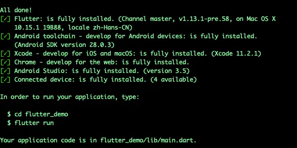<br>打开<code>Android Studio</code><br>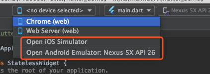<br>选择一个模拟器打开，打开之后就可以选择模拟器跑项目了。<br><br>选择刚打开的模拟器，点绿色的三角启动，不想用模拟器选web也可以。<br>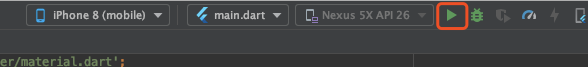<br>跑起来就可以进行下一步了。</p>
<h1 id="二、写Demo"><a href="#二、写Demo" class="headerlink" title="二、写Demo"></a>二、写Demo</h1><h3 id="1、一段文本"><a href="#1、一段文本" class="headerlink" title="1、一段文本"></a>1、一段文本</h3><p>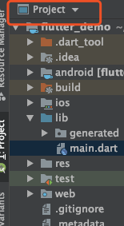<br>这里选成<code>Project</code>，打开<code>lib</code>目录下的<code>main.dart</code>，删除大部分代码，只保留以下部分：</p>
<figure class="highlight plain"><table><tr><td class="gutter"><pre><span class="line">1</span><br><span class="line">2</span><br><span class="line">3</span><br><span class="line">4</span><br><span class="line">5</span><br><span class="line">6</span><br><span class="line">7</span><br><span class="line">8</span><br><span class="line">9</span><br><span class="line">10</span><br><span class="line">11</span><br><span class="line">12</span><br></pre></td><td class="code"><pre><span class="line">import &apos;package:flutter/material.dart&apos;;</span><br><span class="line"></span><br><span class="line">void main() =&gt; runApp(MyApp());</span><br><span class="line"></span><br><span class="line">class MyApp extends StatelessWidget &#123;</span><br><span class="line">  @override</span><br><span class="line">  Widget build(BuildContext context) &#123;</span><br><span class="line">    return MaterialApp(</span><br><span class="line"></span><br><span class="line">    );</span><br><span class="line">  &#125;</span><br><span class="line">&#125;</span><br></pre></td></tr></table></figure>

<p>接下来在<code>MaterialApp</code>中添加文本。</p>
<figure class="highlight plain"><table><tr><td class="gutter"><pre><span class="line">1</span><br><span class="line">2</span><br><span class="line">3</span><br><span class="line">4</span><br><span class="line">5</span><br><span class="line">6</span><br><span class="line">7</span><br><span class="line">8</span><br><span class="line">9</span><br><span class="line">10</span><br><span class="line">11</span><br><span class="line">12</span><br></pre></td><td class="code"><pre><span class="line">import &apos;package:flutter/material.dart&apos;;</span><br><span class="line"></span><br><span class="line">void main() =&gt; runApp(MyApp());</span><br><span class="line"></span><br><span class="line">class MyApp extends StatelessWidget &#123;</span><br><span class="line">  @override</span><br><span class="line">  Widget build(BuildContext context) &#123;</span><br><span class="line">    return MaterialApp(</span><br><span class="line">      home: Text(&apos;我是一段文本&apos;)</span><br><span class="line">    );</span><br><span class="line">  &#125;</span><br><span class="line">&#125;</span><br></pre></td></tr></table></figure>

<p>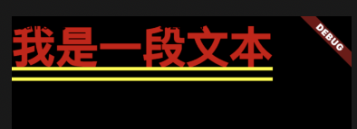<br>文字显示出来了，但是这也太难看了，接下来进行装饰。</p>
<figure class="highlight plain"><table><tr><td class="gutter"><pre><span class="line">1</span><br><span class="line">2</span><br><span class="line">3</span><br><span class="line">4</span><br><span class="line">5</span><br><span class="line">6</span><br><span class="line">7</span><br><span class="line">8</span><br><span class="line">9</span><br><span class="line">10</span><br><span class="line">11</span><br><span class="line">12</span><br><span class="line">13</span><br><span class="line">14</span><br><span class="line">15</span><br><span class="line">16</span><br><span class="line">17</span><br></pre></td><td class="code"><pre><span class="line">import &apos;package:flutter/material.dart&apos;;</span><br><span class="line"></span><br><span class="line">void main() =&gt; runApp(MyApp());</span><br><span class="line"></span><br><span class="line">class MyApp extends StatelessWidget &#123;</span><br><span class="line">  @override</span><br><span class="line">  Widget build(BuildContext context) &#123;</span><br><span class="line">    return MaterialApp(</span><br><span class="line">      home: Scaffold(    //翻译成中文就是脚手架，提供了一个布局框架，里边有很多常用的api，比如顶部标题、底部菜单、左右抽屉等。</span><br><span class="line">        appBar: AppBar(</span><br><span class="line">          title: Text(&apos;文本&apos;)</span><br><span class="line">        ),</span><br><span class="line">        body: Text(&apos;我是一段文本&apos;)</span><br><span class="line">      )</span><br><span class="line">    );</span><br><span class="line">  &#125;</span><br><span class="line">&#125;</span><br></pre></td></tr></table></figure>

<p>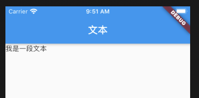<br>变成了这样，比前边好多了，我们再改一下，让这段文字在页面内居中显示，并且换个颜色。</p>
<figure class="highlight plain"><table><tr><td class="gutter"><pre><span class="line">1</span><br><span class="line">2</span><br><span class="line">3</span><br><span class="line">4</span><br><span class="line">5</span><br><span class="line">6</span><br><span class="line">7</span><br><span class="line">8</span><br><span class="line">9</span><br><span class="line">10</span><br><span class="line">11</span><br><span class="line">12</span><br><span class="line">13</span><br><span class="line">14</span><br><span class="line">15</span><br><span class="line">16</span><br><span class="line">17</span><br><span class="line">18</span><br><span class="line">19</span><br><span class="line">20</span><br><span class="line">21</span><br><span class="line">22</span><br><span class="line">23</span><br><span class="line">24</span><br></pre></td><td class="code"><pre><span class="line">import &apos;package:flutter/material.dart&apos;;</span><br><span class="line"></span><br><span class="line">void main() =&gt; runApp(MyApp());</span><br><span class="line"></span><br><span class="line">class MyApp extends StatelessWidget &#123;</span><br><span class="line">  @override</span><br><span class="line">  Widget build(BuildContext context) &#123;</span><br><span class="line">    return MaterialApp(</span><br><span class="line">      home: Scaffold(</span><br><span class="line">        appBar: AppBar(</span><br><span class="line">          title: Text(&apos;文本&apos;)</span><br><span class="line">        ),</span><br><span class="line">        body: Center(</span><br><span class="line">          child: Text(</span><br><span class="line">            &apos;我是一段文本&apos;,</span><br><span class="line">            style: TextStyle(</span><br><span class="line">              color: Color.fromARGB(0xFF, 0xFF, 0x11, 0xF5)</span><br><span class="line">            )</span><br><span class="line">          )</span><br><span class="line">        )</span><br><span class="line">      )</span><br><span class="line">    );</span><br><span class="line">  &#125;</span><br><span class="line">&#125;</span><br></pre></td></tr></table></figure>

<p>只需要加上<code>Center</code>这个widget，就实现了水平垂直居中。<br>关于<code>Text</code>的详细介绍看这里<a href="/post/flutterTextWidget">hello world和文本组件Text、TextSpan</a></p>
<p>到这可能有人会提出问题，一个app不可能所有代码都放在一个class里，那根本没法看，这就是接下来要干的事。</p>
<h3 id="2、组件封装"><a href="#2、组件封装" class="headerlink" title="2、组件封装"></a>2、组件封装</h3><p>定义一个新的class叫<code>Page1</code>，并把<code>scaffold</code>放在里边。</p>
<figure class="highlight plain"><table><tr><td class="gutter"><pre><span class="line">1</span><br><span class="line">2</span><br><span class="line">3</span><br><span class="line">4</span><br><span class="line">5</span><br><span class="line">6</span><br><span class="line">7</span><br><span class="line">8</span><br><span class="line">9</span><br><span class="line">10</span><br><span class="line">11</span><br><span class="line">12</span><br><span class="line">13</span><br><span class="line">14</span><br><span class="line">15</span><br><span class="line">16</span><br><span class="line">17</span><br><span class="line">18</span><br><span class="line">19</span><br><span class="line">20</span><br><span class="line">21</span><br><span class="line">22</span><br><span class="line">23</span><br><span class="line">24</span><br><span class="line">25</span><br><span class="line">26</span><br><span class="line">27</span><br><span class="line">28</span><br><span class="line">29</span><br><span class="line">30</span><br><span class="line">31</span><br></pre></td><td class="code"><pre><span class="line">import &apos;package:flutter/material.dart&apos;;</span><br><span class="line"></span><br><span class="line">void main() =&gt; runApp(MyApp());</span><br><span class="line"></span><br><span class="line">class MyApp extends StatelessWidget &#123;</span><br><span class="line">  @override</span><br><span class="line">  Widget build(BuildContext context) &#123;</span><br><span class="line">    return MaterialApp(</span><br><span class="line">      home: Page1()</span><br><span class="line">    );</span><br><span class="line">  &#125;</span><br><span class="line">&#125;</span><br><span class="line"></span><br><span class="line">class Page1 extends StatelessWidget &#123;</span><br><span class="line">  @override</span><br><span class="line">  Widget build(BuildContext context) &#123;</span><br><span class="line">    return Scaffold(</span><br><span class="line">      appBar: AppBar(</span><br><span class="line">        title: Text(&apos;page1&apos;)</span><br><span class="line">      ),</span><br><span class="line">      body: Center(</span><br><span class="line">        child: Text(</span><br><span class="line">          &apos;我是一段文本&apos;,</span><br><span class="line">          style: TextStyle(</span><br><span class="line">            color: Color.fromARGB(0xFF, 0xFF, 0x11, 0xF5)</span><br><span class="line">          )</span><br><span class="line">        )</span><br><span class="line">      )</span><br><span class="line">    );</span><br><span class="line">  &#125;</span><br><span class="line">&#125;</span><br></pre></td></tr></table></figure>

<p>是不是感觉像是在写react（不考虑他这蛋疼的写法）。<br>写到这又会有人提出问题，这是没写到同一个class里，但是是在同一个文件里啊，接下来咱们就拆成两个文件。<br>在<code>lib</code>目录下新建一个文件叫<code>page1.dart</code>。<br>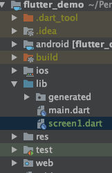<br>内容如下</p>
<figure class="highlight plain"><table><tr><td class="gutter"><pre><span class="line">1</span><br><span class="line">2</span><br><span class="line">3</span><br><span class="line">4</span><br><span class="line">5</span><br><span class="line">6</span><br><span class="line">7</span><br><span class="line">8</span><br><span class="line">9</span><br><span class="line">10</span><br><span class="line">11</span><br><span class="line">12</span><br><span class="line">13</span><br><span class="line">14</span><br><span class="line">15</span><br><span class="line">16</span><br><span class="line">17</span><br><span class="line">18</span><br><span class="line">19</span><br><span class="line">20</span><br></pre></td><td class="code"><pre><span class="line">import &apos;package:flutter/material.dart&apos;;</span><br><span class="line"></span><br><span class="line">class Page1 extends StatelessWidget &#123;</span><br><span class="line">  @override</span><br><span class="line">  Widget build(BuildContext context) &#123;</span><br><span class="line">    return Scaffold(</span><br><span class="line">      appBar: AppBar(</span><br><span class="line">        title: Text(&apos;page1&apos;)</span><br><span class="line">      ),</span><br><span class="line">      body: Center(</span><br><span class="line">        child: Text(</span><br><span class="line">          &apos;我是一段文本&apos;,</span><br><span class="line">          style: TextStyle(</span><br><span class="line">            color: Color.fromARGB(0xFF, 0xFF, 0x11, 0xF5)</span><br><span class="line">          )</span><br><span class="line">        )</span><br><span class="line">      )</span><br><span class="line">  );</span><br><span class="line">  &#125;</span><br><span class="line">&#125;</span><br></pre></td></tr></table></figure>

<p>就是把<code>material.dart</code>import进来之后再把刚刚<code>main.dart</code>里<code>Page1</code>粘过来。<br>下面改写<code>main.dart</code>，将刚新建的<code>page1.dart</code>import进来。</p>
<figure class="highlight plain"><table><tr><td class="gutter"><pre><span class="line">1</span><br><span class="line">2</span><br><span class="line">3</span><br><span class="line">4</span><br><span class="line">5</span><br><span class="line">6</span><br><span class="line">7</span><br><span class="line">8</span><br><span class="line">9</span><br><span class="line">10</span><br><span class="line">11</span><br><span class="line">12</span><br><span class="line">13</span><br></pre></td><td class="code"><pre><span class="line">import &apos;package:flutter/material.dart&apos;;</span><br><span class="line">import &apos;package:flutter_demo/page1.dart&apos;;   //项目目录名/文件名</span><br><span class="line"></span><br><span class="line">void main() =&gt; runApp(MyApp());</span><br><span class="line"></span><br><span class="line">class MyApp extends StatelessWidget &#123;</span><br><span class="line">  @override</span><br><span class="line">  Widget build(BuildContext context) &#123;</span><br><span class="line">    return MaterialApp(</span><br><span class="line">      home: Page1(),</span><br><span class="line">    );</span><br><span class="line">  &#125;</span><br><span class="line">&#125;</span><br></pre></td></tr></table></figure>

<p>这样就做到了组件拆分。<br>开篇的demo地址切到<code>demo_1</code>分支，就是上边的完整代码。</p>
<h3 id="3、一个方块"><a href="#3、一个方块" class="headerlink" title="3、一个方块"></a>3、一个方块</h3><p>html有个最常用的标签<code>div</code>，曾有一段时间把页面布局叫做div布局，flutter里有个类似的widget叫<code>Container</code>（<a href="/post/flutterContainerWidget">容器组件Container</a>）。<br>接下来我们在<code>lib</code>目录下新建一个<code>page2.dart</code>文件。<br>整体框架和<code>page1.dart</code>相同。</p>
<figure class="highlight plain"><table><tr><td class="gutter"><pre><span class="line">1</span><br><span class="line">2</span><br><span class="line">3</span><br><span class="line">4</span><br><span class="line">5</span><br><span class="line">6</span><br><span class="line">7</span><br><span class="line">8</span><br><span class="line">9</span><br><span class="line">10</span><br><span class="line">11</span><br><span class="line">12</span><br><span class="line">13</span><br><span class="line">14</span><br><span class="line">15</span><br></pre></td><td class="code"><pre><span class="line">import &apos;package:flutter/material.dart&apos;;</span><br><span class="line"></span><br><span class="line">class Page2 extends StatelessWidget &#123;</span><br><span class="line">  @override</span><br><span class="line">  Widget build(BuildContext context) &#123;</span><br><span class="line">    return Scaffold(</span><br><span class="line">      appBar: AppBar(</span><br><span class="line">        title: Text(&apos;page2&apos;)</span><br><span class="line">      ),</span><br><span class="line">      body: Center(</span><br><span class="line"></span><br><span class="line">      )</span><br><span class="line">    );</span><br><span class="line">  &#125;</span><br><span class="line">&#125;</span><br></pre></td></tr></table></figure>

<p>我们在<code>main.dart</code>里把<code>page2.dart</code>import进来，然后把home改成<code>Page2</code>。</p>
<figure class="highlight plain"><table><tr><td class="gutter"><pre><span class="line">1</span><br><span class="line">2</span><br><span class="line">3</span><br><span class="line">4</span><br><span class="line">5</span><br><span class="line">6</span><br><span class="line">7</span><br><span class="line">8</span><br><span class="line">9</span><br><span class="line">10</span><br><span class="line">11</span><br><span class="line">12</span><br><span class="line">13</span><br><span class="line">14</span><br></pre></td><td class="code"><pre><span class="line">import &apos;package:flutter/material.dart&apos;;</span><br><span class="line">//import &apos;package:flutter_demo/page1.dart&apos;;</span><br><span class="line">import &apos;package:flutter_demo/page2.dart&apos;;</span><br><span class="line"></span><br><span class="line">void main() =&gt; runApp(MyApp());</span><br><span class="line"></span><br><span class="line">class MyApp extends StatelessWidget &#123;</span><br><span class="line">  @override</span><br><span class="line">  Widget build(BuildContext context) &#123;</span><br><span class="line">    return MaterialApp(</span><br><span class="line">      home: Page2(),</span><br><span class="line">    );</span><br><span class="line">  &#125;</span><br><span class="line">&#125;</span><br></pre></td></tr></table></figure>

<p>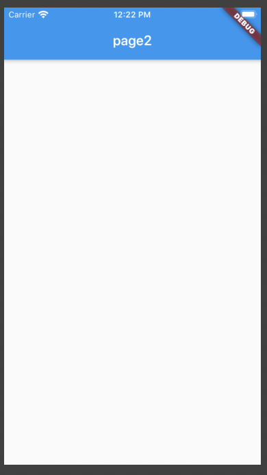<br>可以看见一个空白的页面，title是<code>page2</code>，接下来在<code>Center</code>里边写一个<code>Container</code>。</p>
<figure class="highlight plain"><table><tr><td class="gutter"><pre><span class="line">1</span><br><span class="line">2</span><br><span class="line">3</span><br><span class="line">4</span><br><span class="line">5</span><br><span class="line">6</span><br><span class="line">7</span><br><span class="line">8</span><br><span class="line">9</span><br><span class="line">10</span><br><span class="line">11</span><br><span class="line">12</span><br><span class="line">13</span><br><span class="line">14</span><br><span class="line">15</span><br><span class="line">16</span><br><span class="line">17</span><br><span class="line">18</span><br><span class="line">19</span><br></pre></td><td class="code"><pre><span class="line">import &apos;package:flutter/material.dart&apos;;</span><br><span class="line"></span><br><span class="line">class Page2 extends StatelessWidget &#123;</span><br><span class="line">  @override</span><br><span class="line">  Widget build(BuildContext context) &#123;</span><br><span class="line">    return Scaffold(</span><br><span class="line">      appBar: AppBar(</span><br><span class="line">        title: Text(&apos;page2&apos;)</span><br><span class="line">      ),</span><br><span class="line">      body: Center(</span><br><span class="line">        child: Container(</span><br><span class="line">          width: 200,</span><br><span class="line">          height: 200,</span><br><span class="line">          color: Colors.red</span><br><span class="line">        )</span><br><span class="line">      )</span><br><span class="line">    );</span><br><span class="line">  &#125;</span><br><span class="line">&#125;</span><br></pre></td></tr></table></figure>

<p>可以看见页面上出现了一个红色的方块。<br>有page1和page2了，接下来看以下页面怎么跳转。  </p>
<h3 id="4、路由"><a href="#4、路由" class="headerlink" title="4、路由"></a>4、路由</h3><p>我们来改造一下前边写的demo，<code>main.dart</code>还是import<code>page1.dart</code>。</p>
<figure class="highlight plain"><table><tr><td class="gutter"><pre><span class="line">1</span><br><span class="line">2</span><br><span class="line">3</span><br><span class="line">4</span><br><span class="line">5</span><br><span class="line">6</span><br><span class="line">7</span><br><span class="line">8</span><br><span class="line">9</span><br><span class="line">10</span><br><span class="line">11</span><br><span class="line">12</span><br><span class="line">13</span><br></pre></td><td class="code"><pre><span class="line">import &apos;package:flutter/material.dart&apos;;</span><br><span class="line">import &apos;package:flutter_demo/page1.dart&apos;;</span><br><span class="line"></span><br><span class="line">void main() =&gt; runApp(MyApp());</span><br><span class="line"></span><br><span class="line">class MyApp extends StatelessWidget &#123;</span><br><span class="line">  @override</span><br><span class="line">  Widget build(BuildContext context) &#123;</span><br><span class="line">    return MaterialApp(</span><br><span class="line">      home: Page1(),</span><br><span class="line">    );</span><br><span class="line">  &#125;</span><br><span class="line">&#125;</span><br></pre></td></tr></table></figure>

<p>在<code>page1.dart</code>中，我们在右下角加一个悬浮按钮。</p>
<figure class="highlight plain"><table><tr><td class="gutter"><pre><span class="line">1</span><br><span class="line">2</span><br><span class="line">3</span><br><span class="line">4</span><br><span class="line">5</span><br><span class="line">6</span><br><span class="line">7</span><br><span class="line">8</span><br><span class="line">9</span><br><span class="line">10</span><br><span class="line">11</span><br><span class="line">12</span><br><span class="line">13</span><br><span class="line">14</span><br><span class="line">15</span><br><span class="line">16</span><br><span class="line">17</span><br><span class="line">18</span><br><span class="line">19</span><br><span class="line">20</span><br><span class="line">21</span><br><span class="line">22</span><br><span class="line">23</span><br><span class="line">24</span><br><span class="line">25</span><br></pre></td><td class="code"><pre><span class="line">import &apos;package:flutter/material.dart&apos;;</span><br><span class="line"></span><br><span class="line">class Page1 extends StatelessWidget &#123;</span><br><span class="line">  @override</span><br><span class="line">  Widget build(BuildContext context) &#123;</span><br><span class="line">    return Scaffold(</span><br><span class="line">      appBar: AppBar(</span><br><span class="line">        title: Text(&apos;page1&apos;)</span><br><span class="line">      ),</span><br><span class="line">      body: Center(</span><br><span class="line">        child: Text(</span><br><span class="line">          &apos;我是一段文本&apos;,</span><br><span class="line">          style: TextStyle(</span><br><span class="line">            color: Color.fromARGB(0xFF, 0xFF, 0x11, 0xF5)</span><br><span class="line">          )</span><br><span class="line">        )</span><br><span class="line">      ),</span><br><span class="line">      floatingActionButton: FloatingActionButton(</span><br><span class="line">        onPressed: () &#123;</span><br><span class="line">          print(&apos;pressed next page&apos;);</span><br><span class="line">        &#125;</span><br><span class="line">      )</span><br><span class="line">    );</span><br><span class="line">  &#125;</span><br><span class="line">&#125;</span><br></pre></td></tr></table></figure>

<p>这个时候右下角出现了一个蓝色的悬浮按钮，点击之后可以看见控制台输出打印的信息。<br>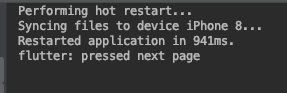<br>为了好看一点，我们在按钮里加一个图标（<a href="/post/flutterIconWidget">图标Icon</a>）。</p>
<figure class="highlight plain"><table><tr><td class="gutter"><pre><span class="line">1</span><br><span class="line">2</span><br><span class="line">3</span><br><span class="line">4</span><br><span class="line">5</span><br><span class="line">6</span><br></pre></td><td class="code"><pre><span class="line">floatingActionButton: FloatingActionButton(</span><br><span class="line">  onPressed: () &#123;</span><br><span class="line">    print(&apos;pressed next page&apos;);</span><br><span class="line">  &#125;,</span><br><span class="line">  child: new Icon(Icons.arrow_forward),</span><br><span class="line">)</span><br></pre></td></tr></table></figure>

<p>效果如下：<br>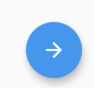<br>接下来是跳转到下一页<br>先在<code>page1.dart</code>中将<code>page2.dart</code>import一下，然后写路由跳转，<code>page1.dart</code>完整的代码如下：</p>
<figure class="highlight plain"><table><tr><td class="gutter"><pre><span class="line">1</span><br><span class="line">2</span><br><span class="line">3</span><br><span class="line">4</span><br><span class="line">5</span><br><span class="line">6</span><br><span class="line">7</span><br><span class="line">8</span><br><span class="line">9</span><br><span class="line">10</span><br><span class="line">11</span><br><span class="line">12</span><br><span class="line">13</span><br><span class="line">14</span><br><span class="line">15</span><br><span class="line">16</span><br><span class="line">17</span><br><span class="line">18</span><br><span class="line">19</span><br><span class="line">20</span><br><span class="line">21</span><br><span class="line">22</span><br><span class="line">23</span><br><span class="line">24</span><br><span class="line">25</span><br><span class="line">26</span><br><span class="line">27</span><br><span class="line">28</span><br><span class="line">29</span><br><span class="line">30</span><br><span class="line">31</span><br></pre></td><td class="code"><pre><span class="line">import &apos;package:flutter/material.dart&apos;;</span><br><span class="line">import &apos;package:flutter_demo/page2.dart&apos;;</span><br><span class="line"></span><br><span class="line">class Page1 extends StatelessWidget &#123;</span><br><span class="line">  @override</span><br><span class="line">  Widget build(BuildContext context) &#123;</span><br><span class="line">    return Scaffold(</span><br><span class="line">      appBar: AppBar(</span><br><span class="line">        title: Text(&apos;page1&apos;)</span><br><span class="line">      ),</span><br><span class="line">      body: Center(</span><br><span class="line">        child: Text(</span><br><span class="line">          &apos;我是一段文本&apos;,</span><br><span class="line">          style: TextStyle(</span><br><span class="line">            color: Color.fromARGB(0xFF, 0xFF, 0x11, 0xF5)</span><br><span class="line">          )</span><br><span class="line">        )</span><br><span class="line">      ),</span><br><span class="line">      floatingActionButton: FloatingActionButton(</span><br><span class="line">        onPressed: () &#123;</span><br><span class="line">          print(&apos;pressed next page&apos;);</span><br><span class="line">          Navigator.push(</span><br><span class="line">            context,</span><br><span class="line">            new MaterialPageRoute(builder: (context) =&gt; Page2()),</span><br><span class="line">          );</span><br><span class="line">        &#125;,</span><br><span class="line">        child: new Icon(Icons.arrow_forward),</span><br><span class="line">      )</span><br><span class="line">    );</span><br><span class="line">  &#125;</span><br><span class="line">&#125;</span><br></pre></td></tr></table></figure>

<p>效果如下<br>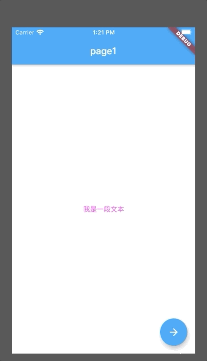<br>如果不想点标题栏的返回按钮，也可以自定义。<br>将<code>page2.dart</code>中的<code>Container</code>删除，换成一个按钮<code>MaterialButton</code>（<a href="/post/flutterButtonWidget">按钮 各种Button</a><br>）。<br>代码如下</p>
<figure class="highlight plain"><table><tr><td class="gutter"><pre><span class="line">1</span><br><span class="line">2</span><br><span class="line">3</span><br><span class="line">4</span><br><span class="line">5</span><br><span class="line">6</span><br><span class="line">7</span><br><span class="line">8</span><br><span class="line">9</span><br><span class="line">10</span><br><span class="line">11</span><br><span class="line">12</span><br><span class="line">13</span><br><span class="line">14</span><br><span class="line">15</span><br><span class="line">16</span><br><span class="line">17</span><br><span class="line">18</span><br><span class="line">19</span><br><span class="line">20</span><br><span class="line">21</span><br><span class="line">22</span><br></pre></td><td class="code"><pre><span class="line">import &apos;package:flutter/material.dart&apos;;</span><br><span class="line"></span><br><span class="line">class Page2 extends StatelessWidget &#123;</span><br><span class="line">  @override</span><br><span class="line">  Widget build(BuildContext context) &#123;</span><br><span class="line">    return Scaffold(</span><br><span class="line">      appBar: AppBar(</span><br><span class="line">        title: Text(&apos;page2&apos;)</span><br><span class="line">      ),</span><br><span class="line">      body: Center(</span><br><span class="line">        child: MaterialButton(</span><br><span class="line">          child: Text(&apos;back&apos;),</span><br><span class="line">          color: Colors.blue,</span><br><span class="line">          onPressed: () &#123;</span><br><span class="line">            print(&apos;back&apos;);</span><br><span class="line">            Navigator.pop(context);</span><br><span class="line">          &#125;</span><br><span class="line">        )</span><br><span class="line">      )</span><br><span class="line">    );</span><br><span class="line">  &#125;</span><br><span class="line">&#125;</span><br></pre></td></tr></table></figure>

<p>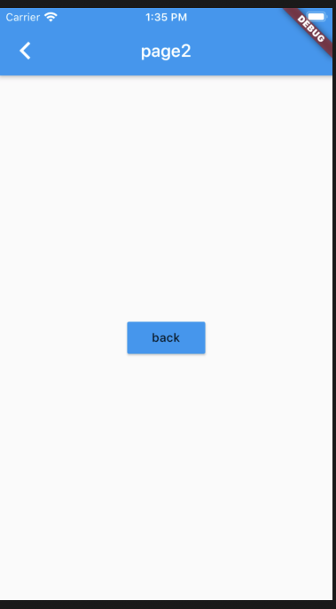<br>只需要调用<code>Navigator.pop(context)</code>方法就可以返回上一页。<br>分支切换到<code>demo_2</code>为以上demo的代码。</p>
<h3 id="5、插播一条调试"><a href="#5、插播一条调试" class="headerlink" title="5、插播一条调试"></a>5、插播一条调试</h3><h5 id="布局"><a href="#布局" class="headerlink" title="布局"></a>布局</h5><p>写web都知道开发者工具可以定位到页面上任意一个元素，flutter也可以。<br><code>Android Studio</code>在菜单栏<code>View -&gt; Tool Windows -&gt; Flutter Inspector</code>。<br>打开之后在编辑区右侧出现了调试工具。<br>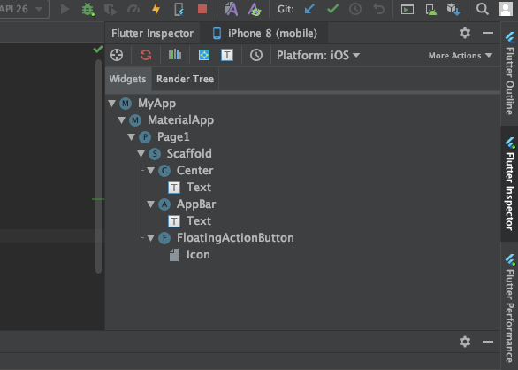<br><code>Widgets</code>可以看见整个页面的结构，点左上角的准星，可以去模拟器中选中某一个<code>Widget</code>。<br>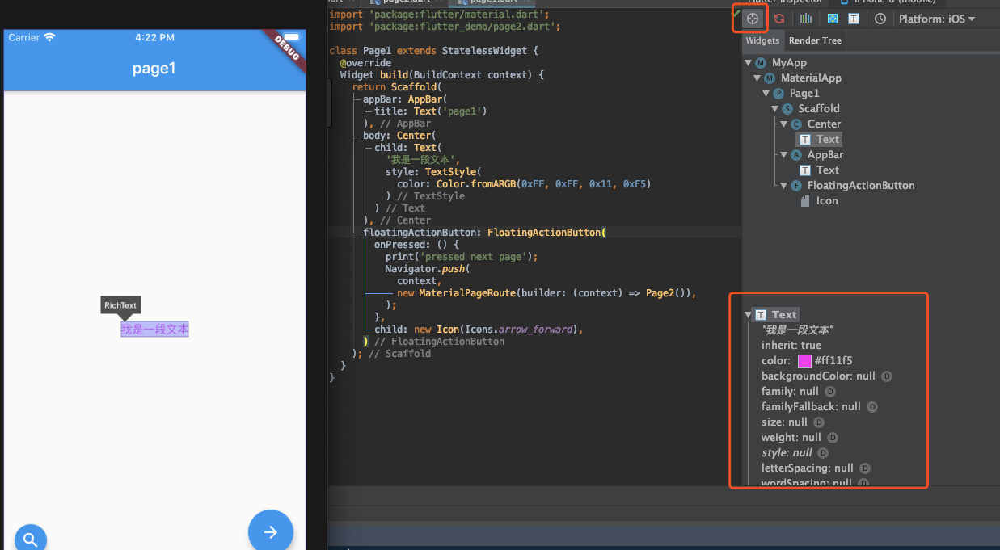<br>并且可以看见这个<code>Widget</code>上的所有属性和样式同时模拟器左下角还会出现一个放大镜，点击放大镜后可以再选中其他<code>Widget</code>。<br>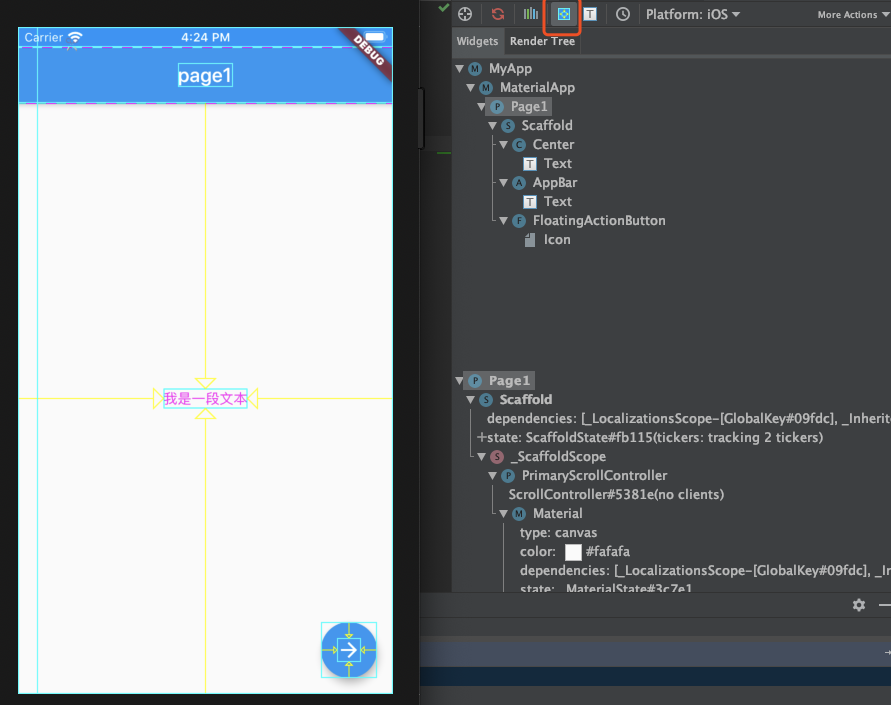<br>另一个工具可以查看页面的整体布局。</p>
<h5 id="打断点"><a href="#打断点" class="headerlink" title="打断点"></a>打断点</h5><p>需要在debug模式下运行才可以打断点。<br>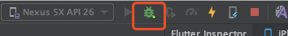<br>用这只虫子启动项目，在某一行代码前点击，出现红色的圆点。<br>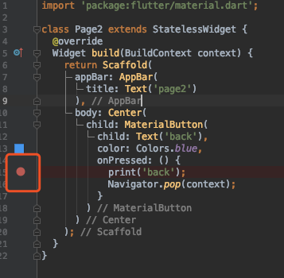<br>然后点击<code>back</code>这个按钮。<br>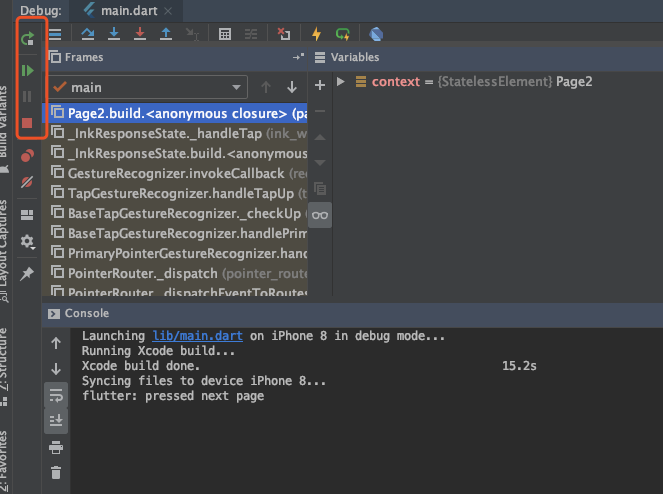<br>和web一样。</p>
<h5 id="利用浏览器调试"><a href="#利用浏览器调试" class="headerlink" title="利用浏览器调试"></a>利用浏览器调试</h5><p><br>点击这个按钮会在浏览器打开<code>Dart DevTools</code>，和在<code>Android Studio</code>调试基本相同，就不重复了，放一张图。<br>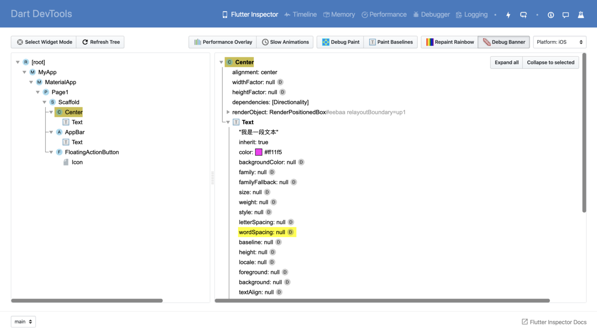</p>
<h3 id="6、图片"><a href="#6、图片" class="headerlink" title="6、图片"></a>6、图片</h3><p>首先新建一个<code>page3.dart</code>的文件，在<code>page2.dart</code>中添加<code>floatingActionButton</code>，并将<code>page3.dart</code>import进来，<code>page3.dart</code> 中搭好页面。<br><code>page2.dart</code></p>
<figure class="highlight plain"><table><tr><td class="gutter"><pre><span class="line">1</span><br><span class="line">2</span><br><span class="line">3</span><br><span class="line">4</span><br><span class="line">5</span><br><span class="line">6</span><br><span class="line">7</span><br><span class="line">8</span><br><span class="line">9</span><br><span class="line">10</span><br><span class="line">11</span><br><span class="line">12</span><br><span class="line">13</span><br><span class="line">14</span><br><span class="line">15</span><br><span class="line">16</span><br><span class="line">17</span><br><span class="line">18</span><br><span class="line">19</span><br><span class="line">20</span><br><span class="line">21</span><br><span class="line">22</span><br><span class="line">23</span><br><span class="line">24</span><br><span class="line">25</span><br><span class="line">26</span><br><span class="line">27</span><br><span class="line">28</span><br><span class="line">29</span><br><span class="line">30</span><br><span class="line">31</span><br><span class="line">32</span><br></pre></td><td class="code"><pre><span class="line">import &apos;package:flutter/material.dart&apos;;</span><br><span class="line">import &apos;package:flutter_demo/page3.dart&apos;;</span><br><span class="line"></span><br><span class="line">class Page2 extends StatelessWidget &#123;</span><br><span class="line">  @override</span><br><span class="line">  Widget build(BuildContext context) &#123;</span><br><span class="line">    return Scaffold(</span><br><span class="line">      appBar: AppBar(</span><br><span class="line">        title: Text(&apos;page2&apos;)</span><br><span class="line">      ),</span><br><span class="line">      body: Center(</span><br><span class="line">        child: MaterialButton(</span><br><span class="line">          child: Text(&apos;back&apos;),</span><br><span class="line">          color: Colors.blue,</span><br><span class="line">          onPressed: () &#123;</span><br><span class="line">            print(&apos;back&apos;);</span><br><span class="line">            Navigator.pop(context);</span><br><span class="line">          &#125;</span><br><span class="line">        )</span><br><span class="line">      ),</span><br><span class="line">      floatingActionButton: FloatingActionButton(</span><br><span class="line">        child: Icon(Icons.arrow_forward),</span><br><span class="line">        onPressed: () &#123;</span><br><span class="line">          Navigator.push(</span><br><span class="line">            context,</span><br><span class="line">            new MaterialPageRoute(builder: (context) =&gt; Page3()),</span><br><span class="line">          );</span><br><span class="line">        &#125;</span><br><span class="line">      ),</span><br><span class="line">    );</span><br><span class="line">  &#125;</span><br><span class="line">&#125;</span><br></pre></td></tr></table></figure>

<p><code>page3.dart</code></p>
<figure class="highlight plain"><table><tr><td class="gutter"><pre><span class="line">1</span><br><span class="line">2</span><br><span class="line">3</span><br><span class="line">4</span><br><span class="line">5</span><br><span class="line">6</span><br><span class="line">7</span><br><span class="line">8</span><br><span class="line">9</span><br><span class="line">10</span><br><span class="line">11</span><br><span class="line">12</span><br><span class="line">13</span><br><span class="line">14</span><br><span class="line">15</span><br></pre></td><td class="code"><pre><span class="line">import &apos;package:flutter/material.dart&apos;;</span><br><span class="line"></span><br><span class="line">class Page3 extends StatelessWidget &#123;</span><br><span class="line">  @override</span><br><span class="line">  Widget build(BuildContext context) &#123;</span><br><span class="line">    return Scaffold(</span><br><span class="line">      appBar: AppBar(</span><br><span class="line">        title: Text(&apos;page3&apos;)</span><br><span class="line">      ),</span><br><span class="line">      body: Center(</span><br><span class="line"></span><br><span class="line">      ),</span><br><span class="line">    );</span><br><span class="line">  &#125;</span><br><span class="line">&#125;</span><br></pre></td></tr></table></figure>

<p>在第二页点右下角的按钮会进入第三页， 一个空页面。<br>接下来在根目录下新建一个<code>images</code>文件夹，里边放一张图片。<br>把刚才图片的路径添加到<code>pubspec.yaml</code>。<br>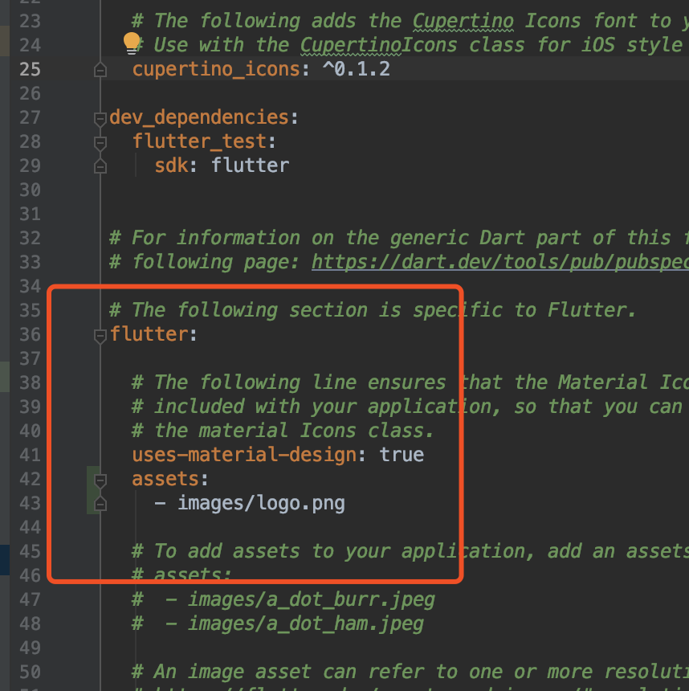</p>
<p>接下来就可以使用这张图片了。</p>
<figure class="highlight plain"><table><tr><td class="gutter"><pre><span class="line">1</span><br><span class="line">2</span><br><span class="line">3</span><br><span class="line">4</span><br><span class="line">5</span><br><span class="line">6</span><br><span class="line">7</span><br><span class="line">8</span><br><span class="line">9</span><br><span class="line">10</span><br><span class="line">11</span><br><span class="line">12</span><br><span class="line">13</span><br><span class="line">14</span><br><span class="line">15</span><br></pre></td><td class="code"><pre><span class="line">import &apos;package:flutter/material.dart&apos;;</span><br><span class="line"></span><br><span class="line">class Page3 extends StatelessWidget &#123;</span><br><span class="line">  @override</span><br><span class="line">  Widget build(BuildContext context) &#123;</span><br><span class="line">    return Scaffold(</span><br><span class="line">      appBar: AppBar(</span><br><span class="line">        title: Text(&apos;page3&apos;)</span><br><span class="line">      ),</span><br><span class="line">      body: Center(</span><br><span class="line">        child: Image.asset(&apos;./images/logo.png&apos;)</span><br><span class="line">      ),</span><br><span class="line">    );</span><br><span class="line">  &#125;</span><br><span class="line">&#125;</span><br></pre></td></tr></table></figure>

<p>保存之后page3中会居中显示一个flutter的logo。<br>有时候我们不需要把图片打包进来，需要用到网络图片，这个时候需要把<code>Image.asset</code>换成<code>Image.network</code>。</p>
<figure class="highlight plain"><table><tr><td class="gutter"><pre><span class="line">1</span><br><span class="line">2</span><br><span class="line">3</span><br><span class="line">4</span><br><span class="line">5</span><br><span class="line">6</span><br><span class="line">7</span><br><span class="line">8</span><br><span class="line">9</span><br><span class="line">10</span><br><span class="line">11</span><br><span class="line">12</span><br><span class="line">13</span><br><span class="line">14</span><br><span class="line">15</span><br></pre></td><td class="code"><pre><span class="line">import &apos;package:flutter/material.dart&apos;;</span><br><span class="line"></span><br><span class="line">class Page3 extends StatelessWidget &#123;</span><br><span class="line">  @override</span><br><span class="line">  Widget build(BuildContext context) &#123;</span><br><span class="line">    return Scaffold(</span><br><span class="line">      appBar: AppBar(</span><br><span class="line">        title: Text(&apos;page3&apos;)</span><br><span class="line">      ),</span><br><span class="line">      body: Center(</span><br><span class="line">        child: Image.network(&apos;https://www.baidu.com/img/bd_logo1.png&apos;)</span><br><span class="line">      ),</span><br><span class="line">    );</span><br><span class="line">  &#125;</span><br><span class="line">&#125;</span><br></pre></td></tr></table></figure>

<p>去网上复制一张图片的链接，如果图片不显示，有可能是图片加了防盗链，这里用了百度的logo。<br>网络图片都有个加载时间，我们在放一个loading占位。<br>把<code>Center</code>换成<code>Stack</code>，<code>Stack</code>里放两个<code>Center</code>，再把loading和图片放在<code>Center</code>里。</p>
<figure class="highlight plain"><table><tr><td class="gutter"><pre><span class="line">1</span><br><span class="line">2</span><br><span class="line">3</span><br><span class="line">4</span><br><span class="line">5</span><br><span class="line">6</span><br><span class="line">7</span><br><span class="line">8</span><br><span class="line">9</span><br><span class="line">10</span><br><span class="line">11</span><br><span class="line">12</span><br><span class="line">13</span><br><span class="line">14</span><br><span class="line">15</span><br><span class="line">16</span><br><span class="line">17</span><br><span class="line">18</span><br><span class="line">19</span><br><span class="line">20</span><br><span class="line">21</span><br><span class="line">22</span><br></pre></td><td class="code"><pre><span class="line">import &apos;package:flutter/material.dart&apos;;</span><br><span class="line"></span><br><span class="line">class Page3 extends StatelessWidget &#123;</span><br><span class="line">  @override</span><br><span class="line">  Widget build(BuildContext context) &#123;</span><br><span class="line">    return Scaffold(</span><br><span class="line">        appBar: AppBar(</span><br><span class="line">            title: Text(&apos;page3&apos;)</span><br><span class="line">        ),</span><br><span class="line">        body: Stack(</span><br><span class="line">          children: &lt;Widget&gt;[</span><br><span class="line">            Center(</span><br><span class="line">              child: CircularProgressIndicator()</span><br><span class="line">            ),</span><br><span class="line">            Center(</span><br><span class="line">              child: Image.network(&apos;https://www.baidu.com/img/bd_logo1.png&apos;)</span><br><span class="line">            ),</span><br><span class="line">          ],</span><br><span class="line">        ),</span><br><span class="line">    );</span><br><span class="line">  &#125;</span><br><span class="line">&#125;</span><br></pre></td></tr></table></figure>

<p>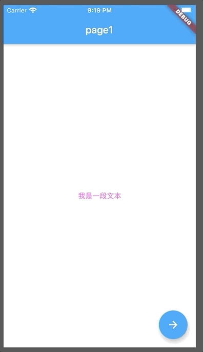</p>
<p>这里简单介绍一下<code>Stack</code>，类似于<code>position: relative</code>，子<code>Widget</code>会重叠显示，上边的demo实际上是图片加载之后把loading盖住了。<br>上边虽然实现了loading占位，但是图片显示太过生硬，我们用<code>FadeInImage</code>给他加个淡入效果。<br><code>pubspec.yaml</code>里添加一个<code>transparent_image</code>（<a href="https://github.com/brianegan/transparent_image" target="_blank" rel="noopener">https://github.com/brianegan/transparent_image</a><br>）在图片加载之前占位用，这里其实体现不出来他的作用，但是<code>placeholder</code>不能为空。</p>
<p>这里用了第三方的包<a href="https://pub.dev/" target="_blank" rel="noopener">https://pub.dev/</a>，类似于npm的仓库。</p>
<p>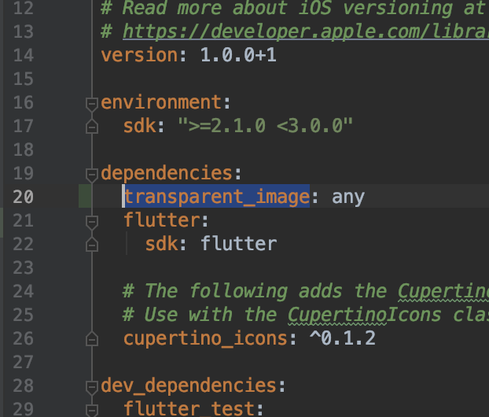</p>
<p>命令行执行<code>flutter pub get</code>如果是在<code>Android Studio</code>中添加之后会有提示，安装好之后改写一下<code>page3.dart</code>。</p>
<figure class="highlight plain"><table><tr><td class="gutter"><pre><span class="line">1</span><br><span class="line">2</span><br><span class="line">3</span><br><span class="line">4</span><br><span class="line">5</span><br><span class="line">6</span><br><span class="line">7</span><br><span class="line">8</span><br><span class="line">9</span><br><span class="line">10</span><br><span class="line">11</span><br><span class="line">12</span><br><span class="line">13</span><br><span class="line">14</span><br><span class="line">15</span><br><span class="line">16</span><br><span class="line">17</span><br><span class="line">18</span><br><span class="line">19</span><br><span class="line">20</span><br><span class="line">21</span><br><span class="line">22</span><br><span class="line">23</span><br><span class="line">24</span><br><span class="line">25</span><br><span class="line">26</span><br></pre></td><td class="code"><pre><span class="line">import &apos;package:flutter/material.dart&apos;;</span><br><span class="line">import &apos;package:transparent_image/transparent_image.dart&apos;;</span><br><span class="line"></span><br><span class="line">class Page3 extends StatelessWidget &#123;</span><br><span class="line">  @override</span><br><span class="line">  Widget build(BuildContext context) &#123;</span><br><span class="line">    return Scaffold(</span><br><span class="line">        appBar: AppBar(</span><br><span class="line">            title: Text(&apos;page3&apos;)</span><br><span class="line">        ),</span><br><span class="line">        body: Stack(</span><br><span class="line">          children: &lt;Widget&gt;[</span><br><span class="line">            Center(</span><br><span class="line">              child: CircularProgressIndicator()</span><br><span class="line">            ),</span><br><span class="line">            Center(</span><br><span class="line">              child: FadeInImage.memoryNetwork(</span><br><span class="line">                placeholder: kTransparentImage,</span><br><span class="line">                image: &apos;https://www.baidu.com/img/bd_logo1.png&apos;</span><br><span class="line">              )</span><br><span class="line">            ),</span><br><span class="line">          ],</span><br><span class="line">        ),</span><br><span class="line">    );</span><br><span class="line">  &#125;</span><br><span class="line">&#125;</span><br></pre></td></tr></table></figure>

<p>效果如下<br>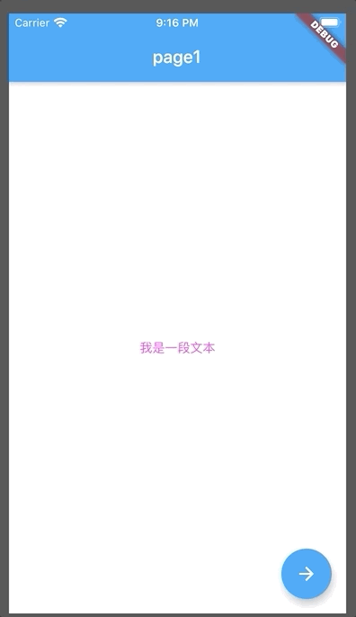</p>
<p>这就比直接显示图片要好很多。<br>以上代码在demo_3分支。</p>
<h3 id="7、滚动列表-amp-网格布局"><a href="#7、滚动列表-amp-网格布局" class="headerlink" title="7、滚动列表 &amp; 网格布局"></a>7、滚动列表 &amp; 网格布局</h3><p>还是在<code>page3.dart</code>中添加<code>floatingActionButton</code>，然后新建一个文件<code>page4.dart</code>，在<code>page3.dart</code>中import。<br>先看一个最简单的列表</p>
<figure class="highlight plain"><table><tr><td class="gutter"><pre><span class="line">1</span><br><span class="line">2</span><br><span class="line">3</span><br><span class="line">4</span><br><span class="line">5</span><br><span class="line">6</span><br><span class="line">7</span><br><span class="line">8</span><br><span class="line">9</span><br><span class="line">10</span><br><span class="line">11</span><br><span class="line">12</span><br><span class="line">13</span><br><span class="line">14</span><br><span class="line">15</span><br><span class="line">16</span><br><span class="line">17</span><br><span class="line">18</span><br><span class="line">19</span><br><span class="line">20</span><br><span class="line">21</span><br><span class="line">22</span><br><span class="line">23</span><br><span class="line">24</span><br><span class="line">25</span><br><span class="line">26</span><br><span class="line">27</span><br><span class="line">28</span><br><span class="line">29</span><br><span class="line">30</span><br><span class="line">31</span><br><span class="line">32</span><br></pre></td><td class="code"><pre><span class="line">import &apos;package:flutter/material.dart&apos;;</span><br><span class="line"></span><br><span class="line">class Page4 extends StatelessWidget &#123;</span><br><span class="line">  @override</span><br><span class="line">  Widget build(BuildContext context) &#123;</span><br><span class="line">    return Scaffold(</span><br><span class="line">      appBar: AppBar(</span><br><span class="line">        title: Text(&apos;page4&apos;)</span><br><span class="line">      ),</span><br><span class="line">      body: ListView(</span><br><span class="line">        children: &lt;Widget&gt;[</span><br><span class="line">          ListTile(</span><br><span class="line">            leading: Icon(Icons.phone),</span><br><span class="line">            title: Text(&apos;Title1&apos;)</span><br><span class="line">          ),</span><br><span class="line">          ListTile(</span><br><span class="line">              leading: Icon(Icons.cached),</span><br><span class="line">              title: Text(&apos;Title2&apos;)</span><br><span class="line">          ),</span><br><span class="line">          ListTile(</span><br><span class="line">              leading: Icon(Icons.adb),</span><br><span class="line">              title: Text(&apos;Title3&apos;)</span><br><span class="line">          ),</span><br><span class="line">          ListTile(</span><br><span class="line">              leading: Icon(Icons.adjust),</span><br><span class="line">              title: Text(&apos;Title4&apos;)</span><br><span class="line">          ),</span><br><span class="line">        ],</span><br><span class="line">      )</span><br><span class="line">    );</span><br><span class="line">  &#125;</span><br><span class="line">&#125;</span><br></pre></td></tr></table></figure>

<p>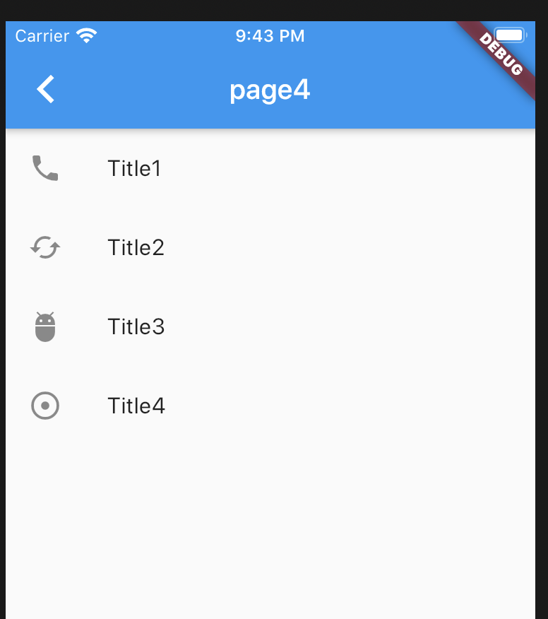</p>
<p>这样就实现了一个滚动列表，可以多复制一些<code>ListTitle</code>尝试一下上下滑动，这里就不写了。<br>纵向滚动实现里，下面看一下横向滚动，直接在<code>ListView</code>里加一个<code>Container</code>。</p>
<figure class="highlight plain"><table><tr><td class="gutter"><pre><span class="line">1</span><br><span class="line">2</span><br><span class="line">3</span><br><span class="line">4</span><br><span class="line">5</span><br><span class="line">6</span><br><span class="line">7</span><br><span class="line">8</span><br><span class="line">9</span><br><span class="line">10</span><br><span class="line">11</span><br><span class="line">12</span><br><span class="line">13</span><br><span class="line">14</span><br><span class="line">15</span><br><span class="line">16</span><br><span class="line">17</span><br><span class="line">18</span><br><span class="line">19</span><br><span class="line">20</span><br><span class="line">21</span><br><span class="line">22</span><br><span class="line">23</span><br><span class="line">24</span><br><span class="line">25</span><br><span class="line">26</span><br><span class="line">27</span><br><span class="line">28</span><br><span class="line">29</span><br><span class="line">30</span><br><span class="line">31</span><br><span class="line">32</span><br><span class="line">33</span><br><span class="line">34</span><br><span class="line">35</span><br><span class="line">36</span><br><span class="line">37</span><br><span class="line">38</span><br><span class="line">39</span><br><span class="line">40</span><br><span class="line">41</span><br><span class="line">42</span><br><span class="line">43</span><br><span class="line">44</span><br><span class="line">45</span><br><span class="line">46</span><br><span class="line">47</span><br><span class="line">48</span><br></pre></td><td class="code"><pre><span class="line">import &apos;package:flutter/material.dart&apos;;</span><br><span class="line"></span><br><span class="line">class Page4 extends StatelessWidget &#123;</span><br><span class="line">  @override</span><br><span class="line">  Widget build(BuildContext context) &#123;</span><br><span class="line">    return Scaffold(</span><br><span class="line">      appBar: AppBar(</span><br><span class="line">        title: Text(&apos;page4&apos;)</span><br><span class="line">      ),</span><br><span class="line">      body: ListView(</span><br><span class="line">        children: &lt;Widget&gt;[</span><br><span class="line">          ListTile(</span><br><span class="line">            leading: Icon(Icons.phone),</span><br><span class="line">            title: Text(&apos;Title1&apos;)</span><br><span class="line">          ),</span><br><span class="line">          ListTile(</span><br><span class="line">              leading: Icon(Icons.cached),</span><br><span class="line">              title: Text(&apos;Title2&apos;)</span><br><span class="line">          ),</span><br><span class="line">          Container(</span><br><span class="line">            height: 200,</span><br><span class="line">            child: ListView(</span><br><span class="line">              scrollDirection: Axis.horizontal,</span><br><span class="line">              children: [</span><br><span class="line">                Container(</span><br><span class="line">                  color: Colors.red,</span><br><span class="line">                  width: 150,</span><br><span class="line">                ),</span><br><span class="line">                Container(</span><br><span class="line">                  color: Colors.blue,</span><br><span class="line">                  width: 150,</span><br><span class="line">                ),</span><br><span class="line">                Container(</span><br><span class="line">                  color: Colors.green,</span><br><span class="line">                  width: 150,</span><br><span class="line">                ),</span><br><span class="line">                Container(</span><br><span class="line">                  color: Colors.yellow,</span><br><span class="line">                  width: 150,</span><br><span class="line">                ),</span><br><span class="line">              ]</span><br><span class="line">            )</span><br><span class="line">          )</span><br><span class="line">        ],</span><br><span class="line">      )</span><br><span class="line">    );</span><br><span class="line">  &#125;</span><br><span class="line">&#125;</span><br></pre></td></tr></table></figure>

<p>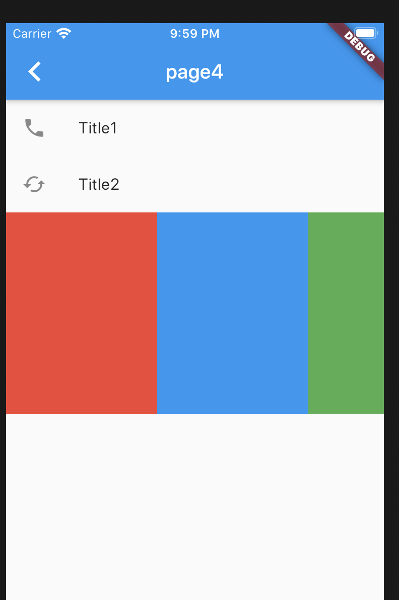<br>这就在纵向列表里加了一个横向的列表。<br>这还不满足的话继续往下看，我们还可以在列表里同时展示两列。</p>
<figure class="highlight plain"><table><tr><td class="gutter"><pre><span class="line">1</span><br><span class="line">2</span><br><span class="line">3</span><br><span class="line">4</span><br><span class="line">5</span><br><span class="line">6</span><br><span class="line">7</span><br><span class="line">8</span><br><span class="line">9</span><br><span class="line">10</span><br><span class="line">11</span><br><span class="line">12</span><br><span class="line">13</span><br><span class="line">14</span><br><span class="line">15</span><br><span class="line">16</span><br><span class="line">17</span><br><span class="line">18</span><br><span class="line">19</span><br><span class="line">20</span><br><span class="line">21</span><br><span class="line">22</span><br><span class="line">23</span><br><span class="line">24</span><br><span class="line">25</span><br><span class="line">26</span><br><span class="line">27</span><br><span class="line">28</span><br><span class="line">29</span><br><span class="line">30</span><br><span class="line">31</span><br><span class="line">32</span><br><span class="line">33</span><br><span class="line">34</span><br><span class="line">35</span><br><span class="line">36</span><br><span class="line">37</span><br><span class="line">38</span><br><span class="line">39</span><br><span class="line">40</span><br><span class="line">41</span><br><span class="line">42</span><br><span class="line">43</span><br><span class="line">44</span><br><span class="line">45</span><br><span class="line">46</span><br><span class="line">47</span><br><span class="line">48</span><br><span class="line">49</span><br><span class="line">50</span><br><span class="line">51</span><br><span class="line">52</span><br><span class="line">53</span><br><span class="line">54</span><br><span class="line">55</span><br><span class="line">56</span><br><span class="line">57</span><br><span class="line">58</span><br><span class="line">59</span><br><span class="line">60</span><br><span class="line">61</span><br><span class="line">62</span><br></pre></td><td class="code"><pre><span class="line">import &apos;package:flutter/material.dart&apos;;</span><br><span class="line"></span><br><span class="line">class Page4 extends StatelessWidget &#123;</span><br><span class="line">  @override</span><br><span class="line">  Widget build(BuildContext context) &#123;</span><br><span class="line">    return Scaffold(</span><br><span class="line">      appBar: AppBar(</span><br><span class="line">        title: Text(&apos;page4&apos;)</span><br><span class="line">      ),</span><br><span class="line">      body: ListView(</span><br><span class="line">        children: &lt;Widget&gt;[</span><br><span class="line">          ListTile(</span><br><span class="line">            leading: Icon(Icons.phone),</span><br><span class="line">            title: Text(&apos;Title1&apos;)</span><br><span class="line">          ),</span><br><span class="line">          ListTile(</span><br><span class="line">              leading: Icon(Icons.cached),</span><br><span class="line">              title: Text(&apos;Title2&apos;)</span><br><span class="line">          ),</span><br><span class="line">          Container(</span><br><span class="line">            height: 200,</span><br><span class="line">            child: ListView(</span><br><span class="line">              scrollDirection: Axis.horizontal,</span><br><span class="line">              children: [</span><br><span class="line">                Container(</span><br><span class="line">                  color: Colors.red,</span><br><span class="line">                  width: 150,</span><br><span class="line">                ),</span><br><span class="line">                Container(</span><br><span class="line">                  color: Colors.blue,</span><br><span class="line">                  width: 150,</span><br><span class="line">                ),</span><br><span class="line">                Container(</span><br><span class="line">                  color: Colors.green,</span><br><span class="line">                  width: 150,</span><br><span class="line">                ),</span><br><span class="line">                Container(</span><br><span class="line">                  color: Colors.yellow,</span><br><span class="line">                  width: 150,</span><br><span class="line">                ),</span><br><span class="line">              ]</span><br><span class="line">            )</span><br><span class="line">          ),</span><br><span class="line">          Container(</span><br><span class="line">            height: 200,</span><br><span class="line">            decoration: BoxDecoration(</span><br><span class="line">              border: Border.all(width: 1, color: Colors.black)</span><br><span class="line">            ),</span><br><span class="line">            child: GridView.count(</span><br><span class="line">              crossAxisCount: 2,</span><br><span class="line">              children: List.generate(100, (index) &#123;</span><br><span class="line">                return Center(</span><br><span class="line">                  child: Text(&apos;Item $index&apos;)</span><br><span class="line">                );</span><br><span class="line">              &#125;)</span><br><span class="line">            )</span><br><span class="line">          )</span><br><span class="line">        ],</span><br><span class="line">      )</span><br><span class="line">    );</span><br><span class="line">  &#125;</span><br><span class="line">&#125;</span><br></pre></td></tr></table></figure>

<p>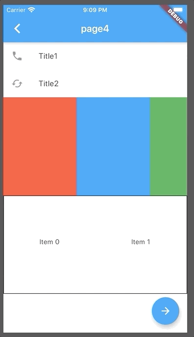</p>
<p>这里用了<code>GridView</code>和<code>List.generate</code>。<br><code>GridView</code>就是网格布局，可以指定一行有几个<code>Widget</code>，每个<code>Widget</code>之间的距离等。<br><code>List.generate</code>值是一个函数，返回一个<code>Widget</code>，用来生成一组<code>Widget</code>。<br>以上代码在<code>demo_4</code>分支。</p>
<h3 id="8、手势"><a href="#8、手势" class="headerlink" title="8、手势"></a>8、手势</h3><p>前边都是一些常见<code>Widget</code>的简单用法，接下来说一下手势。<br>先来介绍一下<code>Pointers</code>，用户与屏幕交互的原始数据，包括<code>PointerDownEvent</code>、<code>PointerMoveEvent</code>、<code>PointerUpEvent</code>、<code>PointerCancelEvent</code>。类似于移动端<code>web</code>的<code>touch</code>事件。<br>再说一下手势，一个或几个<code>Pointer</code>的封装，先来一个按钮的demo看一下。</p>
<figure class="highlight plain"><table><tr><td class="gutter"><pre><span class="line">1</span><br><span class="line">2</span><br><span class="line">3</span><br><span class="line">4</span><br><span class="line">5</span><br><span class="line">6</span><br><span class="line">7</span><br><span class="line">8</span><br><span class="line">9</span><br><span class="line">10</span><br><span class="line">11</span><br><span class="line">12</span><br><span class="line">13</span><br><span class="line">14</span><br><span class="line">15</span><br><span class="line">16</span><br><span class="line">17</span><br><span class="line">18</span><br><span class="line">19</span><br><span class="line">20</span><br><span class="line">21</span><br><span class="line">22</span><br><span class="line">23</span><br><span class="line">24</span><br><span class="line">25</span><br><span class="line">26</span><br><span class="line">27</span><br><span class="line">28</span><br><span class="line">29</span><br><span class="line">30</span><br><span class="line">31</span><br><span class="line">32</span><br><span class="line">33</span><br><span class="line">34</span><br><span class="line">35</span><br><span class="line">36</span><br><span class="line">37</span><br><span class="line">38</span><br><span class="line">39</span><br><span class="line">40</span><br></pre></td><td class="code"><pre><span class="line">import &apos;package:flutter/material.dart&apos;;</span><br><span class="line"></span><br><span class="line">class Page5 extends StatelessWidget&#123;</span><br><span class="line">  final items = new List&lt;String&gt;.generate(5, (i) =&gt; &apos;Item $&#123;i + 1&#125;&apos;);</span><br><span class="line"></span><br><span class="line">  @override</span><br><span class="line">  Widget build(BuildContext context) &#123;</span><br><span class="line">    return Scaffold(</span><br><span class="line">      appBar: AppBar(</span><br><span class="line">        title: Text(&apos;page5&apos;),</span><br><span class="line">      ),</span><br><span class="line">      body: InkWell(</span><br><span class="line">        child: Center(</span><br><span class="line">          child: Container(</span><br><span class="line">            child: Text(&apos;this is a button&apos;),</span><br><span class="line">            padding: EdgeInsets.only(</span><br><span class="line">              top: 10,</span><br><span class="line">              bottom: 10</span><br><span class="line">            )</span><br><span class="line">          )</span><br><span class="line">        ),</span><br><span class="line">        onTap: () &#123;</span><br><span class="line">          print(&apos;on tap&apos;);</span><br><span class="line">        &#125;,</span><br><span class="line">        onTapDown: (tapDownDetail) &#123;</span><br><span class="line">          print(&apos;on tap down&apos;);</span><br><span class="line">        &#125;,</span><br><span class="line">        onTapCancel: () &#123;</span><br><span class="line">          print(&apos;on tap cancel&apos;);</span><br><span class="line">        &#125;,</span><br><span class="line">        onDoubleTap: () &#123;</span><br><span class="line">          print(&apos;on dubble tap&apos;);</span><br><span class="line">        &#125;,</span><br><span class="line">        onLongPress: () &#123;</span><br><span class="line">          print(&apos;on long press&apos;);</span><br><span class="line">        &#125;</span><br><span class="line">      )</span><br><span class="line">    );</span><br><span class="line">  &#125;</span><br><span class="line">&#125;</span><br></pre></td></tr></table></figure>

<p>这样一个全屏的大按钮就完成了，点击还有水波纹效果。。。<br>监听了五种手势，可以看一下打印。<br>接下来对demo进行改造，写一个可以滑动删除的列表。</p>
<figure class="highlight plain"><table><tr><td class="gutter"><pre><span class="line">1</span><br><span class="line">2</span><br><span class="line">3</span><br><span class="line">4</span><br><span class="line">5</span><br><span class="line">6</span><br><span class="line">7</span><br><span class="line">8</span><br><span class="line">9</span><br><span class="line">10</span><br><span class="line">11</span><br><span class="line">12</span><br><span class="line">13</span><br><span class="line">14</span><br><span class="line">15</span><br><span class="line">16</span><br><span class="line">17</span><br><span class="line">18</span><br><span class="line">19</span><br><span class="line">20</span><br><span class="line">21</span><br><span class="line">22</span><br><span class="line">23</span><br><span class="line">24</span><br><span class="line">25</span><br><span class="line">26</span><br><span class="line">27</span><br><span class="line">28</span><br><span class="line">29</span><br><span class="line">30</span><br><span class="line">31</span><br><span class="line">32</span><br><span class="line">33</span><br><span class="line">34</span><br><span class="line">35</span><br><span class="line">36</span><br><span class="line">37</span><br><span class="line">38</span><br><span class="line">39</span><br><span class="line">40</span><br><span class="line">41</span><br><span class="line">42</span><br><span class="line">43</span><br><span class="line">44</span><br><span class="line">45</span><br><span class="line">46</span><br><span class="line">47</span><br><span class="line">48</span><br><span class="line">49</span><br><span class="line">50</span><br><span class="line">51</span><br><span class="line">52</span><br><span class="line">53</span><br><span class="line">54</span><br><span class="line">55</span><br><span class="line">56</span><br><span class="line">57</span><br><span class="line">58</span><br><span class="line">59</span><br><span class="line">60</span><br><span class="line">61</span><br><span class="line">62</span><br><span class="line">63</span><br><span class="line">64</span><br><span class="line">65</span><br><span class="line">66</span><br><span class="line">67</span><br><span class="line">68</span><br><span class="line">69</span><br><span class="line">70</span><br></pre></td><td class="code"><pre><span class="line">import &apos;package:flutter/material.dart&apos;;</span><br><span class="line"></span><br><span class="line">class Page5 extends StatelessWidget&#123;</span><br><span class="line">  final items = new List&lt;String&gt;.generate(5, (i) =&gt; &apos;Item $&#123;i + 1&#125;&apos;);</span><br><span class="line"></span><br><span class="line">  @override</span><br><span class="line">  Widget build(BuildContext context) &#123;</span><br><span class="line">    return Scaffold(</span><br><span class="line">      appBar: AppBar(</span><br><span class="line">        title: Text(&apos;page5&apos;),</span><br><span class="line">      ),</span><br><span class="line">      body: ListView(</span><br><span class="line">        children: &lt;Widget&gt; [</span><br><span class="line">          InkWell(</span><br><span class="line">            child: Center(</span><br><span class="line">              child: Container(</span><br><span class="line">                child: Text(&apos;this is a button&apos;),</span><br><span class="line">                padding: EdgeInsets.only(</span><br><span class="line">                  top: 10,</span><br><span class="line">                  bottom: 10</span><br><span class="line">                )</span><br><span class="line">              )</span><br><span class="line">            ),</span><br><span class="line">            onTap: () &#123;</span><br><span class="line">              print(&apos;on tap&apos;);</span><br><span class="line">            &#125;,</span><br><span class="line">            onTapDown: (tapDownDetail) &#123;</span><br><span class="line">              print(&apos;on tap down&apos;);</span><br><span class="line">            &#125;,</span><br><span class="line">            onTapCancel: () &#123;</span><br><span class="line">              print(&apos;on tap cancel&apos;);</span><br><span class="line">            &#125;,</span><br><span class="line">            onDoubleTap: () &#123;</span><br><span class="line">              print(&apos;on dubble tap&apos;);</span><br><span class="line">            &#125;,</span><br><span class="line">            onLongPress: () &#123;</span><br><span class="line">              print(&apos;on long press&apos;);</span><br><span class="line">            &#125;</span><br><span class="line">          ),</span><br><span class="line">          Container(</span><br><span class="line">            height: 400,</span><br><span class="line">            child: ListView.builder(</span><br><span class="line">              itemCount: items.length,</span><br><span class="line">              itemBuilder: (context, index) &#123;</span><br><span class="line">                final item = items[index];</span><br><span class="line">                return Dismissible(</span><br><span class="line">                  key: Key(&apos;key_$index&apos;),</span><br><span class="line">                  onDismissed: (direction) &#123;</span><br><span class="line">                    items.removeAt(index);</span><br><span class="line">                    Scaffold.of(context).showSnackBar(</span><br><span class="line">                      SnackBar(</span><br><span class="line">                        content: Text(&apos;$item dismissed&apos;)</span><br><span class="line">                      )</span><br><span class="line">                    );</span><br><span class="line">                  &#125;,</span><br><span class="line">                  background: Container(</span><br><span class="line">                    color: Colors.red</span><br><span class="line">                  ),</span><br><span class="line">                  child: ListTile(</span><br><span class="line">                    title: Text(&apos;$item&apos;)</span><br><span class="line">                  )</span><br><span class="line">                );</span><br><span class="line">              &#125;</span><br><span class="line">            )</span><br><span class="line">          )</span><br><span class="line">        ]</span><br><span class="line">      )</span><br><span class="line">    );</span><br><span class="line">  &#125;</span><br><span class="line">&#125;</span><br></pre></td></tr></table></figure>

<p>看一下效果<br>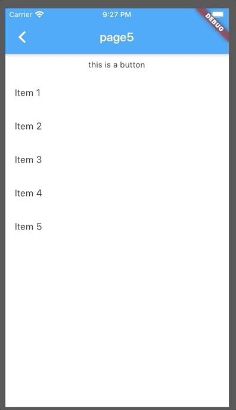<br>这里用了<code>List.generate</code>方法生成了一个<code>List</code> ，然后用了<code>ListView.builder</code>生成了一个<code>ListView</code>。<code>Dismissible</code>是flutter提供的一个可以滑动删除的<code>Widget</code>，<code>SnackBar</code>就是底部的提示。<br>关于手势的中文文档看这里<a href="https://flutterchina.club/gestures/" target="_blank" rel="noopener">https://flutterchina.club/gestures/</a>。<br>以上demo在<code>demo_5</code>分支。</p>
<h3 id="9、有状态组件"><a href="#9、有状态组件" class="headerlink" title="9、有状态组件"></a>9、有状态组件</h3><p>前边的<code>Widget</code>都是继承<code>StatelessWidget</code>也就是无状态组件，接下来看一下<code>StatefulWidget</code>有状态组件。<br>先来布个局<br>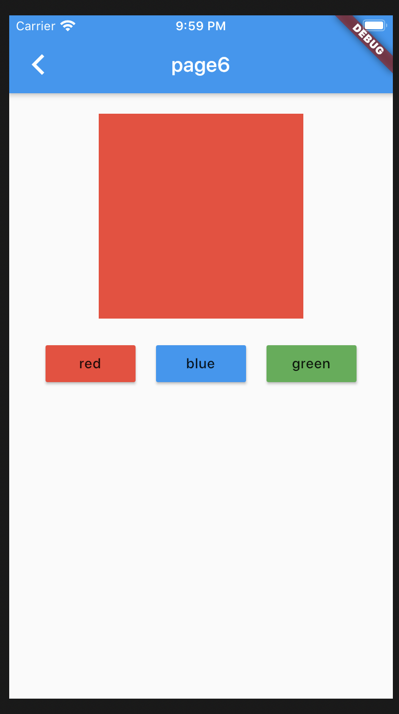<br>这个结构很简单，上边一个红色的<code>Container</code>，下边一行放三个按钮<code>MaterialButton</code>，最终实现的效果就是点击按钮改变上边<code>Container</code>的颜色。<br>先看布局代码</p>
<figure class="highlight plain"><table><tr><td class="gutter"><pre><span class="line">1</span><br><span class="line">2</span><br><span class="line">3</span><br><span class="line">4</span><br><span class="line">5</span><br><span class="line">6</span><br><span class="line">7</span><br><span class="line">8</span><br><span class="line">9</span><br><span class="line">10</span><br><span class="line">11</span><br><span class="line">12</span><br><span class="line">13</span><br><span class="line">14</span><br><span class="line">15</span><br><span class="line">16</span><br><span class="line">17</span><br><span class="line">18</span><br><span class="line">19</span><br><span class="line">20</span><br><span class="line">21</span><br><span class="line">22</span><br><span class="line">23</span><br><span class="line">24</span><br><span class="line">25</span><br><span class="line">26</span><br><span class="line">27</span><br><span class="line">28</span><br><span class="line">29</span><br><span class="line">30</span><br><span class="line">31</span><br><span class="line">32</span><br><span class="line">33</span><br><span class="line">34</span><br><span class="line">35</span><br><span class="line">36</span><br><span class="line">37</span><br><span class="line">38</span><br><span class="line">39</span><br><span class="line">40</span><br><span class="line">41</span><br><span class="line">42</span><br><span class="line">43</span><br><span class="line">44</span><br><span class="line">45</span><br><span class="line">46</span><br><span class="line">47</span><br><span class="line">48</span><br><span class="line">49</span><br><span class="line">50</span><br><span class="line">51</span><br><span class="line">52</span><br><span class="line">53</span><br><span class="line">54</span><br><span class="line">55</span><br><span class="line">56</span><br><span class="line">57</span><br><span class="line">58</span><br><span class="line">59</span><br><span class="line">60</span><br><span class="line">61</span><br><span class="line">62</span><br><span class="line">63</span><br><span class="line">64</span><br><span class="line">65</span><br><span class="line">66</span><br><span class="line">67</span><br><span class="line">68</span><br><span class="line">69</span><br><span class="line">70</span><br></pre></td><td class="code"><pre><span class="line">import &apos;package:flutter/material.dart&apos;;</span><br><span class="line"></span><br><span class="line">class Page6 extends StatelessWidget &#123;</span><br><span class="line">  @override</span><br><span class="line">  Widget build(BuildContext context) &#123;</span><br><span class="line">    return Scaffold(</span><br><span class="line">      appBar: AppBar(</span><br><span class="line">        title: Text(&apos;page6&apos;),</span><br><span class="line">      ),</span><br><span class="line">      body: Column(</span><br><span class="line">        crossAxisAlignment: CrossAxisAlignment.center,</span><br><span class="line">        children: &lt;Widget&gt;[</span><br><span class="line">          Container(</span><br><span class="line">            width: 200,</span><br><span class="line">            height: 200,</span><br><span class="line">            color: Colors.red,</span><br><span class="line">            margin: EdgeInsets.only(</span><br><span class="line">              top: 20,</span><br><span class="line">              bottom: 20</span><br><span class="line">            ),</span><br><span class="line">          ),</span><br><span class="line">          Row (</span><br><span class="line">            mainAxisAlignment: MainAxisAlignment.center,</span><br><span class="line">            children: &lt;Widget&gt;[</span><br><span class="line">              Container (</span><br><span class="line">                padding: EdgeInsets.only(</span><br><span class="line">                  left: 10,</span><br><span class="line">                  right: 10</span><br><span class="line">                ),</span><br><span class="line">                child: MaterialButton (</span><br><span class="line">                  color: Colors.red,</span><br><span class="line">                  child: Text(&apos;red&apos;),</span><br><span class="line">                  onPressed: () &#123;</span><br><span class="line">                    print(&apos;red&apos;);</span><br><span class="line">                  &#125;,</span><br><span class="line">                ),</span><br><span class="line">              ),</span><br><span class="line">              Container (</span><br><span class="line">                padding: EdgeInsets.only(</span><br><span class="line">                    left: 10,</span><br><span class="line">                    right: 10</span><br><span class="line">                ),</span><br><span class="line">                child: MaterialButton (</span><br><span class="line">                  color: Colors.blue,</span><br><span class="line">                  child: Text(&apos;blue&apos;),</span><br><span class="line">                  onPressed: () &#123;</span><br><span class="line">                    print(&apos;blue&apos;);</span><br><span class="line">                  &#125;</span><br><span class="line">                ),</span><br><span class="line">              ),</span><br><span class="line">              Container (</span><br><span class="line">                padding: EdgeInsets.only(</span><br><span class="line">                  left: 10,</span><br><span class="line">                  right: 10</span><br><span class="line">                ),</span><br><span class="line">                child: MaterialButton (</span><br><span class="line">                  color: Colors.green,</span><br><span class="line">                  child: Text(&apos;green&apos;),</span><br><span class="line">                  onPressed: () &#123;</span><br><span class="line">                    print(&apos;green&apos;);</span><br><span class="line">                  &#125;</span><br><span class="line">                )</span><br><span class="line">              )</span><br><span class="line">            ],</span><br><span class="line">          )</span><br><span class="line">        ],</span><br><span class="line">      )</span><br><span class="line">    );</span><br><span class="line">  &#125;</span><br><span class="line">&#125;</span><br></pre></td></tr></table></figure>

<p>里边用了<code>Column</code>和<code>Row</code>这两个新的<code>Widget</code>，一个是子<code>Widget</code>纵向排列，另一个是横向排列，另外还用了<code>MainAxisAlignment</code>主轴上的对齐方式和<code>CrossAxisAlignment</code>交叉轴上的对齐方式，这里都用了居中，至于<code>margin</code>为什么不加在<code>MaterialButton</code>上，对不起，没有。<br>接下来对demo进行改写，<code>StatelessWidget</code>肯定是不行的，要换成<code>StatefulWidget</code>。<br>先看代码</p>
<figure class="highlight plain"><table><tr><td class="gutter"><pre><span class="line">1</span><br><span class="line">2</span><br><span class="line">3</span><br><span class="line">4</span><br><span class="line">5</span><br><span class="line">6</span><br><span class="line">7</span><br><span class="line">8</span><br><span class="line">9</span><br><span class="line">10</span><br><span class="line">11</span><br><span class="line">12</span><br><span class="line">13</span><br><span class="line">14</span><br><span class="line">15</span><br><span class="line">16</span><br><span class="line">17</span><br><span class="line">18</span><br><span class="line">19</span><br><span class="line">20</span><br><span class="line">21</span><br><span class="line">22</span><br><span class="line">23</span><br><span class="line">24</span><br><span class="line">25</span><br><span class="line">26</span><br><span class="line">27</span><br><span class="line">28</span><br><span class="line">29</span><br><span class="line">30</span><br><span class="line">31</span><br><span class="line">32</span><br><span class="line">33</span><br><span class="line">34</span><br><span class="line">35</span><br><span class="line">36</span><br><span class="line">37</span><br><span class="line">38</span><br><span class="line">39</span><br><span class="line">40</span><br><span class="line">41</span><br><span class="line">42</span><br><span class="line">43</span><br><span class="line">44</span><br><span class="line">45</span><br><span class="line">46</span><br><span class="line">47</span><br><span class="line">48</span><br><span class="line">49</span><br><span class="line">50</span><br><span class="line">51</span><br><span class="line">52</span><br><span class="line">53</span><br><span class="line">54</span><br><span class="line">55</span><br><span class="line">56</span><br><span class="line">57</span><br><span class="line">58</span><br><span class="line">59</span><br><span class="line">60</span><br><span class="line">61</span><br><span class="line">62</span><br><span class="line">63</span><br><span class="line">64</span><br><span class="line">65</span><br><span class="line">66</span><br><span class="line">67</span><br><span class="line">68</span><br><span class="line">69</span><br><span class="line">70</span><br><span class="line">71</span><br><span class="line">72</span><br><span class="line">73</span><br><span class="line">74</span><br><span class="line">75</span><br><span class="line">76</span><br><span class="line">77</span><br><span class="line">78</span><br><span class="line">79</span><br><span class="line">80</span><br><span class="line">81</span><br><span class="line">82</span><br></pre></td><td class="code"><pre><span class="line">import &apos;package:flutter/material.dart&apos;;</span><br><span class="line"></span><br><span class="line">class Page6 extends StatelessWidget &#123;</span><br><span class="line">  @override</span><br><span class="line">  Widget build(BuildContext context) &#123;</span><br><span class="line">    return Scaffold(</span><br><span class="line">      appBar: AppBar(</span><br><span class="line">        title: Text(&apos;page6&apos;),</span><br><span class="line">      ),</span><br><span class="line">      body: BoxChangeColor()</span><br><span class="line">    );</span><br><span class="line">  &#125;</span><br><span class="line">&#125;</span><br><span class="line"></span><br><span class="line">class BoxChangeColor extends StatefulWidget &#123;</span><br><span class="line">  @override</span><br><span class="line">  _BoxChangeColorState createState() =&gt; new _BoxChangeColorState();</span><br><span class="line">&#125;</span><br><span class="line"></span><br><span class="line">class _BoxChangeColorState extends State&lt;BoxChangeColor&gt; &#123;</span><br><span class="line">  @override</span><br><span class="line">  Widget build(BuildContext context) &#123;</span><br><span class="line">    return Column(</span><br><span class="line">      crossAxisAlignment: CrossAxisAlignment.center,</span><br><span class="line">      children: &lt;Widget&gt;[</span><br><span class="line">        Container(</span><br><span class="line">          width: 200,</span><br><span class="line">          height: 200,</span><br><span class="line">          color: Colors.red,</span><br><span class="line">          margin: EdgeInsets.only(</span><br><span class="line">            top: 20,</span><br><span class="line">            bottom: 20</span><br><span class="line">          ),</span><br><span class="line">        ),</span><br><span class="line">        Row (</span><br><span class="line">          mainAxisAlignment: MainAxisAlignment.center,</span><br><span class="line">          children: &lt;Widget&gt;[</span><br><span class="line">            Container (</span><br><span class="line">              padding: EdgeInsets.only(</span><br><span class="line">                left: 10,</span><br><span class="line">                right: 10</span><br><span class="line">              ),</span><br><span class="line">              child: MaterialButton (</span><br><span class="line">                color: Colors.red,</span><br><span class="line">                child: Text(&apos;red&apos;),</span><br><span class="line">                onPressed: () &#123;</span><br><span class="line">                  print(&apos;red&apos;);</span><br><span class="line">                &#125;,</span><br><span class="line">              ),</span><br><span class="line">            ),</span><br><span class="line">            Container (</span><br><span class="line">              padding: EdgeInsets.only(</span><br><span class="line">                left: 10,</span><br><span class="line">                right: 10</span><br><span class="line">              ),</span><br><span class="line">              child: MaterialButton (</span><br><span class="line">                color: Colors.blue,</span><br><span class="line">                child: Text(&apos;blue&apos;),</span><br><span class="line">                onPressed: () &#123;</span><br><span class="line">                  print(&apos;blue&apos;);</span><br><span class="line">                &#125;</span><br><span class="line">              ),</span><br><span class="line">            ),</span><br><span class="line">            Container (</span><br><span class="line">              padding: EdgeInsets.only(</span><br><span class="line">                left: 10,</span><br><span class="line">                right: 10</span><br><span class="line">              ),</span><br><span class="line">              child: MaterialButton (</span><br><span class="line">                color: Colors.green,</span><br><span class="line">                child: Text(&apos;green&apos;),</span><br><span class="line">                onPressed: () &#123;</span><br><span class="line">                  print(&apos;green&apos;);</span><br><span class="line">                &#125;</span><br><span class="line">              )</span><br><span class="line">            )</span><br><span class="line">          ],</span><br><span class="line">        )</span><br><span class="line">      ],</span><br><span class="line">    );</span><br><span class="line">  &#125;</span><br><span class="line">&#125;</span><br></pre></td></tr></table></figure>

<p>这里新建了一个<code>BoxChangeColor</code>继承了<code>StatefulWidget</code>，并重写了<code>createState</code>方法，再创建一个<code>_BoxChangeColorState</code>类继承<code>State</code>，在<code>_BoxChangeColorState</code>返回上边的<code>Column</code>，这样就完成了一个缺少状态的有状态组件。<br>以<code>_</code>开头表示私有。<br>下面把缺少的状态添加进去。<br>在<code>_BoxChangeColorState</code>中声明一个变量，这个变量就是<code>state</code>，类型为<code>Color</code>并把这个<code>state</code>写成<code>Container</code>的 <code>color</code>属性值，在<code>MaterialButton</code>的<code>onPressed</code>事件中调用<code>setState</code>方法来改变<code>state</code>，这个时候会重新<code>build</code>，实现了切换颜色。<br>这个demo的完整带么如下：</p>
<figure class="highlight plain"><table><tr><td class="gutter"><pre><span class="line">1</span><br><span class="line">2</span><br><span class="line">3</span><br><span class="line">4</span><br><span class="line">5</span><br><span class="line">6</span><br><span class="line">7</span><br><span class="line">8</span><br><span class="line">9</span><br><span class="line">10</span><br><span class="line">11</span><br><span class="line">12</span><br><span class="line">13</span><br><span class="line">14</span><br><span class="line">15</span><br><span class="line">16</span><br><span class="line">17</span><br><span class="line">18</span><br><span class="line">19</span><br><span class="line">20</span><br><span class="line">21</span><br><span class="line">22</span><br><span class="line">23</span><br><span class="line">24</span><br><span class="line">25</span><br><span class="line">26</span><br><span class="line">27</span><br><span class="line">28</span><br><span class="line">29</span><br><span class="line">30</span><br><span class="line">31</span><br><span class="line">32</span><br><span class="line">33</span><br><span class="line">34</span><br><span class="line">35</span><br><span class="line">36</span><br><span class="line">37</span><br><span class="line">38</span><br><span class="line">39</span><br><span class="line">40</span><br><span class="line">41</span><br><span class="line">42</span><br><span class="line">43</span><br><span class="line">44</span><br><span class="line">45</span><br><span class="line">46</span><br><span class="line">47</span><br><span class="line">48</span><br><span class="line">49</span><br><span class="line">50</span><br><span class="line">51</span><br><span class="line">52</span><br><span class="line">53</span><br><span class="line">54</span><br><span class="line">55</span><br><span class="line">56</span><br><span class="line">57</span><br><span class="line">58</span><br><span class="line">59</span><br><span class="line">60</span><br><span class="line">61</span><br><span class="line">62</span><br><span class="line">63</span><br><span class="line">64</span><br><span class="line">65</span><br><span class="line">66</span><br><span class="line">67</span><br><span class="line">68</span><br><span class="line">69</span><br><span class="line">70</span><br><span class="line">71</span><br><span class="line">72</span><br><span class="line">73</span><br><span class="line">74</span><br><span class="line">75</span><br><span class="line">76</span><br><span class="line">77</span><br><span class="line">78</span><br><span class="line">79</span><br><span class="line">80</span><br><span class="line">81</span><br><span class="line">82</span><br><span class="line">83</span><br><span class="line">84</span><br><span class="line">85</span><br><span class="line">86</span><br><span class="line">87</span><br><span class="line">88</span><br><span class="line">89</span><br><span class="line">90</span><br></pre></td><td class="code"><pre><span class="line">import &apos;package:flutter/material.dart&apos;;</span><br><span class="line"></span><br><span class="line">class Page6 extends StatelessWidget &#123;</span><br><span class="line">  @override</span><br><span class="line">  Widget build(BuildContext context) &#123;</span><br><span class="line">    return Scaffold(</span><br><span class="line">      appBar: AppBar(</span><br><span class="line">        title: Text(&apos;page6&apos;),</span><br><span class="line">      ),</span><br><span class="line">      body: BoxChangeColor()</span><br><span class="line">    );</span><br><span class="line">  &#125;</span><br><span class="line">&#125;</span><br><span class="line"></span><br><span class="line">class BoxChangeColor extends StatefulWidget &#123;</span><br><span class="line">  @override</span><br><span class="line">  _BoxChangeColorState createState() =&gt; new _BoxChangeColorState();</span><br><span class="line">&#125;</span><br><span class="line"></span><br><span class="line">class _BoxChangeColorState extends State&lt;BoxChangeColor&gt; &#123;</span><br><span class="line">  Color color = Colors.red;</span><br><span class="line"></span><br><span class="line">  @override</span><br><span class="line">  Widget build(BuildContext context) &#123;</span><br><span class="line">    return Column(</span><br><span class="line">      crossAxisAlignment: CrossAxisAlignment.center,</span><br><span class="line">      children: &lt;Widget&gt;[</span><br><span class="line">        Container(</span><br><span class="line">          width: 200,</span><br><span class="line">          height: 200,</span><br><span class="line">          color: color,</span><br><span class="line">          margin: EdgeInsets.only(</span><br><span class="line">            top: 20,</span><br><span class="line">            bottom: 20</span><br><span class="line">          ),</span><br><span class="line">        ),</span><br><span class="line">        Row (</span><br><span class="line">          mainAxisAlignment: MainAxisAlignment.center,</span><br><span class="line">          children: &lt;Widget&gt;[</span><br><span class="line">            Container (</span><br><span class="line">              padding: EdgeInsets.only(</span><br><span class="line">                left: 10,</span><br><span class="line">                right: 10</span><br><span class="line">              ),</span><br><span class="line">              child: MaterialButton (</span><br><span class="line">                color: Colors.red,</span><br><span class="line">                child: Text(&apos;red&apos;),</span><br><span class="line">                onPressed: () &#123;</span><br><span class="line">                  setState(() &#123;</span><br><span class="line">                    color = Colors.red;</span><br><span class="line">                  &#125;);</span><br><span class="line">                &#125;,</span><br><span class="line">              ),</span><br><span class="line">            ),</span><br><span class="line">            Container (</span><br><span class="line">              padding: EdgeInsets.only(</span><br><span class="line">                left: 10,</span><br><span class="line">                right: 10</span><br><span class="line">              ),</span><br><span class="line">              child: MaterialButton (</span><br><span class="line">                color: Colors.blue,</span><br><span class="line">                child: Text(&apos;blue&apos;),</span><br><span class="line">                onPressed: () &#123;</span><br><span class="line">                  setState(() &#123;</span><br><span class="line">                    color = Colors.blue;</span><br><span class="line">                  &#125;);</span><br><span class="line">                &#125;</span><br><span class="line">              ),</span><br><span class="line">            ),</span><br><span class="line">            Container (</span><br><span class="line">              padding: EdgeInsets.only(</span><br><span class="line">                left: 10,</span><br><span class="line">                right: 10</span><br><span class="line">              ),</span><br><span class="line">              child: MaterialButton (</span><br><span class="line">                color: Colors.green,</span><br><span class="line">                child: Text(&apos;green&apos;),</span><br><span class="line">                onPressed: () &#123;</span><br><span class="line">                  setState(() &#123;</span><br><span class="line">                    color = Colors.green;</span><br><span class="line">                  &#125;);</span><br><span class="line">                &#125;</span><br><span class="line">              )</span><br><span class="line">            )</span><br><span class="line">          ],</span><br><span class="line">        )</span><br><span class="line">      ],</span><br><span class="line">    );</span><br><span class="line">  &#125;</span><br><span class="line">&#125;</span><br></pre></td></tr></table></figure>

<p>再来看一下效果<br>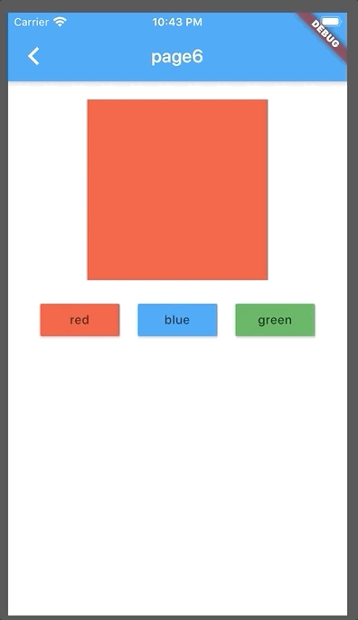<br>以上代码在<code>demo_6</code>分支。</p>
<h3 id="10、模拟登录"><a href="#10、模拟登录" class="headerlink" title="10、模拟登录"></a>10、模拟登录</h3><p>前边都是基本用法的介绍，而且demo都很零碎，接下来做一个模拟登录的demo。<br>点击<code>Login</code>按钮跳转至登录页面，点击<code>Cancel</code>按钮返回登录页面，输入<code>username</code>和<code>password</code>后点击登录页面的<code>Login</code>按钮模拟登录，跳转回前一页面，这个时候隐藏登录页面的<code>Login</code>按钮并显示一张图片。<br>首先新建一个<code>login.dart</code>文件用作登录页面，终于不是page了，在里边创建一个名为<code>Login</code>的<code>StatefulWidget</code>，然后在<code>main.dart</code>中把这个文件import进来，然后在<code>main.dart</code>创建一个名为<code>HomePage</code>的<code>StatefulWidget</code>作为主页，中间放一个按钮，点击按钮跳转至登录页。<br>先看效果<br>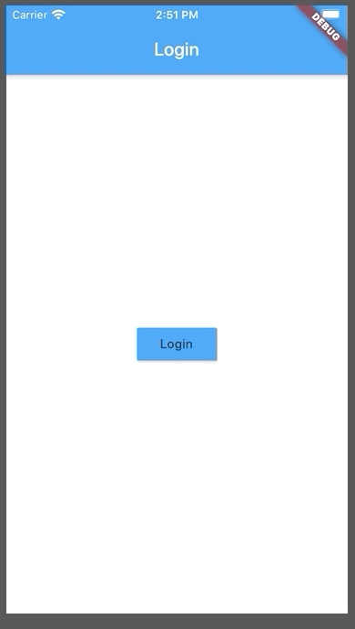<br>再看代码<br><code>main.dart</code></p>
<figure class="highlight plain"><table><tr><td class="gutter"><pre><span class="line">1</span><br><span class="line">2</span><br><span class="line">3</span><br><span class="line">4</span><br><span class="line">5</span><br><span class="line">6</span><br><span class="line">7</span><br><span class="line">8</span><br><span class="line">9</span><br><span class="line">10</span><br><span class="line">11</span><br><span class="line">12</span><br><span class="line">13</span><br><span class="line">14</span><br><span class="line">15</span><br><span class="line">16</span><br><span class="line">17</span><br><span class="line">18</span><br><span class="line">19</span><br><span class="line">20</span><br><span class="line">21</span><br><span class="line">22</span><br><span class="line">23</span><br><span class="line">24</span><br><span class="line">25</span><br><span class="line">26</span><br><span class="line">27</span><br><span class="line">28</span><br><span class="line">29</span><br><span class="line">30</span><br><span class="line">31</span><br><span class="line">32</span><br><span class="line">33</span><br><span class="line">34</span><br><span class="line">35</span><br><span class="line">36</span><br><span class="line">37</span><br><span class="line">38</span><br><span class="line">39</span><br><span class="line">40</span><br><span class="line">41</span><br><span class="line">42</span><br><span class="line">43</span><br><span class="line">44</span><br><span class="line">45</span><br></pre></td><td class="code"><pre><span class="line">import &apos;package:flutter/material.dart&apos;;</span><br><span class="line">import &apos;package:flutter_demo/login.dart&apos;;</span><br><span class="line"></span><br><span class="line">void main() =&gt; runApp(MyApp());</span><br><span class="line"></span><br><span class="line">class MyApp extends StatelessWidget &#123;</span><br><span class="line">  @override</span><br><span class="line">  Widget build(BuildContext context) &#123;</span><br><span class="line">    return MaterialApp(</span><br><span class="line">      home: HomePage(),</span><br><span class="line">    );</span><br><span class="line">  &#125;</span><br><span class="line">&#125;</span><br><span class="line"></span><br><span class="line">class HomePage extends StatefulWidget &#123;</span><br><span class="line">  @override</span><br><span class="line">  _HomePageState createState() =&gt; new _HomePageState();</span><br><span class="line">&#125;</span><br><span class="line"></span><br><span class="line">class _HomePageState extends State&lt;HomePage&gt; &#123;</span><br><span class="line">  @override</span><br><span class="line">  Widget build(BuildContext context) &#123;</span><br><span class="line">    return Scaffold (</span><br><span class="line">      appBar: AppBar(</span><br><span class="line">        title: Text(&apos;Login&apos;)</span><br><span class="line">      ),</span><br><span class="line">      body: Center (</span><br><span class="line">        child: RaisedButton(</span><br><span class="line">          child: Text(&apos;Login&apos;),</span><br><span class="line">          color: Colors.blue,</span><br><span class="line">          onPressed: () &#123;</span><br><span class="line">            Navigator.push(</span><br><span class="line">              context,</span><br><span class="line">              MaterialPageRoute(</span><br><span class="line">                fullscreenDialog: true,</span><br><span class="line">                builder: (context) =&gt; Login()</span><br><span class="line">              )</span><br><span class="line">            );</span><br><span class="line">          &#125;</span><br><span class="line">        )</span><br><span class="line">      )</span><br><span class="line">    );</span><br><span class="line"></span><br><span class="line">  &#125;</span><br><span class="line">&#125;</span><br></pre></td></tr></table></figure>

<p>这里用了个<code>fullscreenDialog</code>属性，全屏弹窗，下一个页面从底部弹出。<br><code>login.dart</code></p>
<figure class="highlight plain"><table><tr><td class="gutter"><pre><span class="line">1</span><br><span class="line">2</span><br><span class="line">3</span><br><span class="line">4</span><br><span class="line">5</span><br><span class="line">6</span><br><span class="line">7</span><br><span class="line">8</span><br><span class="line">9</span><br><span class="line">10</span><br><span class="line">11</span><br><span class="line">12</span><br><span class="line">13</span><br><span class="line">14</span><br><span class="line">15</span><br><span class="line">16</span><br><span class="line">17</span><br><span class="line">18</span><br><span class="line">19</span><br><span class="line">20</span><br><span class="line">21</span><br><span class="line">22</span><br><span class="line">23</span><br><span class="line">24</span><br><span class="line">25</span><br><span class="line">26</span><br><span class="line">27</span><br><span class="line">28</span><br><span class="line">29</span><br><span class="line">30</span><br><span class="line">31</span><br><span class="line">32</span><br><span class="line">33</span><br><span class="line">34</span><br><span class="line">35</span><br><span class="line">36</span><br><span class="line">37</span><br><span class="line">38</span><br><span class="line">39</span><br><span class="line">40</span><br><span class="line">41</span><br><span class="line">42</span><br><span class="line">43</span><br><span class="line">44</span><br><span class="line">45</span><br><span class="line">46</span><br><span class="line">47</span><br><span class="line">48</span><br><span class="line">49</span><br><span class="line">50</span><br><span class="line">51</span><br><span class="line">52</span><br><span class="line">53</span><br><span class="line">54</span><br><span class="line">55</span><br><span class="line">56</span><br><span class="line">57</span><br><span class="line">58</span><br><span class="line">59</span><br><span class="line">60</span><br><span class="line">61</span><br><span class="line">62</span><br><span class="line">63</span><br><span class="line">64</span><br><span class="line">65</span><br><span class="line">66</span><br><span class="line">67</span><br><span class="line">68</span><br><span class="line">69</span><br><span class="line">70</span><br><span class="line">71</span><br><span class="line">72</span><br></pre></td><td class="code"><pre><span class="line">import &apos;package:flutter/material.dart&apos;;</span><br><span class="line"></span><br><span class="line">class Login extends StatefulWidget &#123;</span><br><span class="line">  @override</span><br><span class="line">  _LoginState createState() =&gt; new _LoginState();</span><br><span class="line">&#125;</span><br><span class="line"></span><br><span class="line">class _LoginState extends State&lt;Login&gt; &#123;</span><br><span class="line">  @override</span><br><span class="line">  Widget build(BuildContext context) &#123;</span><br><span class="line">    return Scaffold(</span><br><span class="line">      body: Column(</span><br><span class="line">        crossAxisAlignment: CrossAxisAlignment.center,</span><br><span class="line">        children: &lt;Widget&gt;[</span><br><span class="line">          Container (</span><br><span class="line">            padding: EdgeInsets.only(</span><br><span class="line">              top:50,</span><br><span class="line">              left: 20,</span><br><span class="line">              right: 20</span><br><span class="line">            ),</span><br><span class="line">            child: TextField (</span><br><span class="line">              decoration: InputDecoration(</span><br><span class="line">                prefixIcon: Icon(Icons.person),</span><br><span class="line">                labelText: (&apos;username&apos;)</span><br><span class="line">              ),</span><br><span class="line">            )</span><br><span class="line">          ),</span><br><span class="line">          Container (</span><br><span class="line">            padding: EdgeInsets.all(20),</span><br><span class="line">            child: TextField (</span><br><span class="line">              decoration: InputDecoration(</span><br><span class="line">                prefixIcon: Icon(Icons.lock),</span><br><span class="line">                labelText: (&apos;password&apos;)</span><br><span class="line">              ),</span><br><span class="line">              obscureText: true</span><br><span class="line">            )</span><br><span class="line">          ),</span><br><span class="line">          Row (</span><br><span class="line">            mainAxisAlignment: MainAxisAlignment.center,</span><br><span class="line">            children: &lt;Widget&gt;[</span><br><span class="line">              Container (</span><br><span class="line">                margin: EdgeInsets.only(</span><br><span class="line">                  left: 10,</span><br><span class="line">                  right: 10</span><br><span class="line">                ),</span><br><span class="line">                child: RaisedButton(</span><br><span class="line">                  child: Text(&apos;Login&apos;),</span><br><span class="line">                  color: Colors.blue,</span><br><span class="line">                  onPressed: () &#123;</span><br><span class="line"></span><br><span class="line">                  &#125;</span><br><span class="line">                )</span><br><span class="line">              ),</span><br><span class="line">              Container (</span><br><span class="line">                margin: EdgeInsets.only(</span><br><span class="line">                  left: 10,</span><br><span class="line">                  right: 10</span><br><span class="line">                ),</span><br><span class="line">                child: RaisedButton(</span><br><span class="line">                  child: Text(&apos;Cancel&apos;),</span><br><span class="line">                  onPressed: () &#123;</span><br><span class="line">                    Navigator.pop(context);</span><br><span class="line">                  &#125;</span><br><span class="line">                )</span><br><span class="line">              )</span><br><span class="line">            ]</span><br><span class="line">          )</span><br><span class="line">        ],</span><br><span class="line">      )</span><br><span class="line">    );</span><br><span class="line">  &#125;</span><br><span class="line">&#125;</span><br></pre></td></tr></table></figure>

<p>这里用了文本输入框<code>TextField</code>，一个花里胡哨的<code>Widget</code>属性一大堆，和<code>html</code>里的<code>input</code>但是要比<code>input</code>强大很多，想要的效果这个<code>Widget</code>基本上都有，只要加属性就行了。这里用了<code>decoration</code>的<code>prefixIcon</code>输入框前的图标，<code>labelText</code>类似于<code>input</code>的<code>placeholder</code>当输入框获得焦点时虽小到左上角，还有<code>obscureText</code>是否密文。</p>
<p>写到这布局基本上就算完成了，接下来加状态，<code>HomePage</code>加一个登录状态，<code>Login</code>加上<code>username</code>和<code>password</code>，并在点<code>Login</code>的时候做空校验，通过之后跳转回<code>HomePage</code>并带上登录状态。</p>
<p>首先在<code>Login</code>里添加两个<code>state</code>，<code>username</code>和<code>password</code>，并在两个<code>TextField</code>里监听<code>onChanged</code>事件，给<code>username</code>和<code>password</code>赋值，并在点击<code>Login</code>的时候做校验。</p>
<p><code>TextField</code></p>
<figure class="highlight plain"><table><tr><td class="gutter"><pre><span class="line">1</span><br><span class="line">2</span><br><span class="line">3</span><br><span class="line">4</span><br><span class="line">5</span><br><span class="line">6</span><br><span class="line">7</span><br><span class="line">8</span><br><span class="line">9</span><br><span class="line">10</span><br><span class="line">11</span><br></pre></td><td class="code"><pre><span class="line">TextField (</span><br><span class="line">  decoration: InputDecoration(</span><br><span class="line">    prefixIcon: Icon(Icons.person),</span><br><span class="line">    labelText: (&apos;username&apos;)</span><br><span class="line">  ),</span><br><span class="line">  onChanged: (value) &#123;</span><br><span class="line">    setState(() &#123;</span><br><span class="line">      username = value;</span><br><span class="line">    &#125;);</span><br><span class="line">  &#125;,</span><br><span class="line">)</span><br></pre></td></tr></table></figure>

<p><code>username</code>和<code>password</code>一样，就不重复了。  </p>
<p><code>Cancel</code></p>
<figure class="highlight plain"><table><tr><td class="gutter"><pre><span class="line">1</span><br><span class="line">2</span><br><span class="line">3</span><br><span class="line">4</span><br><span class="line">5</span><br><span class="line">6</span><br><span class="line">7</span><br><span class="line">8</span><br><span class="line">9</span><br><span class="line">10</span><br></pre></td><td class="code"><pre><span class="line">RaisedButton(</span><br><span class="line">  child: Text(&apos;Cancel&apos;),</span><br><span class="line">  onPressed: () &#123;</span><br><span class="line">    setState(() &#123;</span><br><span class="line">      username = &apos;&apos;;</span><br><span class="line">      password = &apos;&apos;;  </span><br><span class="line">    &#125;);</span><br><span class="line">    Navigator.pop(context);</span><br><span class="line">  &#125;</span><br><span class="line">)</span><br></pre></td></tr></table></figure>

<p>取消的时候将<code>username</code>和<code>password</code>置空。  </p>
<p><code>Login</code></p>
<figure class="highlight plain"><table><tr><td class="gutter"><pre><span class="line">1</span><br><span class="line">2</span><br><span class="line">3</span><br><span class="line">4</span><br><span class="line">5</span><br><span class="line">6</span><br><span class="line">7</span><br><span class="line">8</span><br><span class="line">9</span><br><span class="line">10</span><br><span class="line">11</span><br><span class="line">12</span><br><span class="line">13</span><br><span class="line">14</span><br><span class="line">15</span><br><span class="line">16</span><br><span class="line">17</span><br><span class="line">18</span><br><span class="line">19</span><br></pre></td><td class="code"><pre><span class="line">RaisedButton(</span><br><span class="line">  child: Text(&apos;Login&apos;),</span><br><span class="line">  color: Colors.blue,</span><br><span class="line">  onPressed: () &#123;</span><br><span class="line">    String tip = &apos;&apos;;</span><br><span class="line">    if (username == &apos;&apos;) &#123;</span><br><span class="line">      tip = &apos;username empty&apos;;</span><br><span class="line">    &#125; else if (password == &apos;&apos;) &#123;</span><br><span class="line">      tip = &apos;password empty&apos;;</span><br><span class="line">    &#125; else &#123;</span><br><span class="line">      setState(() &#123;</span><br><span class="line">        username = &apos;&apos;;</span><br><span class="line">        password = &apos;&apos;;</span><br><span class="line">      &#125;);</span><br><span class="line">    tip = &apos;success&apos;;</span><br><span class="line">    &#125;</span><br><span class="line">    print(tip);</span><br><span class="line">  &#125;</span><br><span class="line">)</span><br></pre></td></tr></table></figure>

<p>在这里对<code>username</code>和<code>password</code>做校验，得到不同的<code>tip</code>。<br>三种不同状态，可以打印出来。<br><br>接下来做提示，就用之前用过的<code>SnackBar</code>。</p>
<figure class="highlight plain"><table><tr><td class="gutter"><pre><span class="line">1</span><br><span class="line">2</span><br><span class="line">3</span><br><span class="line">4</span><br><span class="line">5</span><br><span class="line">6</span><br><span class="line">7</span><br><span class="line">8</span><br><span class="line">9</span><br><span class="line">10</span><br><span class="line">11</span><br><span class="line">12</span><br><span class="line">13</span><br><span class="line">14</span><br><span class="line">15</span><br><span class="line">16</span><br><span class="line">17</span><br><span class="line">18</span><br><span class="line">19</span><br><span class="line">20</span><br><span class="line">21</span><br><span class="line">22</span><br><span class="line">23</span><br><span class="line">24</span><br><span class="line">25</span><br><span class="line">26</span><br><span class="line">27</span><br><span class="line">28</span><br><span class="line">29</span><br><span class="line">30</span><br><span class="line">31</span><br><span class="line">32</span><br><span class="line">33</span><br><span class="line">34</span><br><span class="line">35</span><br><span class="line">36</span><br><span class="line">37</span><br><span class="line">38</span><br><span class="line">39</span><br><span class="line">40</span><br><span class="line">41</span><br><span class="line">42</span><br><span class="line">43</span><br><span class="line">44</span><br><span class="line">45</span><br><span class="line">46</span><br><span class="line">47</span><br><span class="line">48</span><br><span class="line">49</span><br><span class="line">50</span><br><span class="line">51</span><br><span class="line">52</span><br><span class="line">53</span><br><span class="line">54</span><br><span class="line">55</span><br><span class="line">56</span><br><span class="line">57</span><br><span class="line">58</span><br><span class="line">59</span><br><span class="line">60</span><br><span class="line">61</span><br><span class="line">62</span><br><span class="line">63</span><br><span class="line">64</span><br><span class="line">65</span><br><span class="line">66</span><br><span class="line">67</span><br><span class="line">68</span><br><span class="line">69</span><br><span class="line">70</span><br><span class="line">71</span><br><span class="line">72</span><br><span class="line">73</span><br><span class="line">74</span><br><span class="line">75</span><br><span class="line">76</span><br><span class="line">77</span><br><span class="line">78</span><br><span class="line">79</span><br><span class="line">80</span><br><span class="line">81</span><br><span class="line">82</span><br><span class="line">83</span><br><span class="line">84</span><br><span class="line">85</span><br><span class="line">86</span><br><span class="line">87</span><br><span class="line">88</span><br><span class="line">89</span><br><span class="line">90</span><br><span class="line">91</span><br><span class="line">92</span><br><span class="line">93</span><br><span class="line">94</span><br><span class="line">95</span><br><span class="line">96</span><br><span class="line">97</span><br><span class="line">98</span><br><span class="line">99</span><br><span class="line">100</span><br><span class="line">101</span><br><span class="line">102</span><br><span class="line">103</span><br><span class="line">104</span><br><span class="line">105</span><br><span class="line">106</span><br><span class="line">107</span><br><span class="line">108</span><br><span class="line">109</span><br><span class="line">110</span><br><span class="line">111</span><br><span class="line">112</span><br><span class="line">113</span><br><span class="line">114</span><br><span class="line">115</span><br></pre></td><td class="code"><pre><span class="line">import &apos;package:flutter/material.dart&apos;;</span><br><span class="line">import &apos;dart:async&apos;;</span><br><span class="line"></span><br><span class="line">class Login extends StatefulWidget &#123;</span><br><span class="line">  @override</span><br><span class="line">  _LoginState createState() =&gt; new _LoginState();</span><br><span class="line">&#125;</span><br><span class="line"></span><br><span class="line">class _LoginState extends State&lt;Login&gt; &#123;</span><br><span class="line">  String username = &apos;&apos;;</span><br><span class="line">  String password = &apos;&apos;;</span><br><span class="line"></span><br><span class="line">  @override</span><br><span class="line">  Widget build(BuildContext context) &#123;</span><br><span class="line">    return Scaffold(</span><br><span class="line">      body: Builder (builder: (BuildContext context) &#123;</span><br><span class="line">        return Column(</span><br><span class="line">          crossAxisAlignment: CrossAxisAlignment.center,</span><br><span class="line">          children: &lt;Widget&gt;[</span><br><span class="line">            Container (</span><br><span class="line">              padding: EdgeInsets.only(</span><br><span class="line">                top:50,</span><br><span class="line">                left: 20,</span><br><span class="line">                right: 20</span><br><span class="line">              ),</span><br><span class="line">              child: TextField (</span><br><span class="line">                decoration: InputDecoration(</span><br><span class="line">                  prefixIcon: Icon(Icons.person),</span><br><span class="line">                  labelText: (&apos;username&apos;)</span><br><span class="line">                ),</span><br><span class="line">                onChanged: (value) &#123;</span><br><span class="line">                  setState(() &#123;</span><br><span class="line">                    username = value;</span><br><span class="line">                  &#125;);</span><br><span class="line">                &#125;,</span><br><span class="line">              )</span><br><span class="line">            ),</span><br><span class="line">            Container (</span><br><span class="line">              padding: EdgeInsets.all(20),</span><br><span class="line">              child: TextField (</span><br><span class="line">                decoration: InputDecoration(</span><br><span class="line">                  prefixIcon: Icon(Icons.lock),</span><br><span class="line">                  labelText: (&apos;password&apos;)</span><br><span class="line">                ),</span><br><span class="line">                obscureText: true,</span><br><span class="line">                onChanged: (value) &#123;</span><br><span class="line">                  setState(() &#123;</span><br><span class="line">                    password = value;</span><br><span class="line">                  &#125;);</span><br><span class="line">                &#125;</span><br><span class="line">              )</span><br><span class="line">            ),</span><br><span class="line">            Row (</span><br><span class="line">              mainAxisAlignment: MainAxisAlignment.center,</span><br><span class="line">              children: &lt;Widget&gt;[</span><br><span class="line">                Container (</span><br><span class="line">                  margin: EdgeInsets.only(</span><br><span class="line">                    left: 10,</span><br><span class="line">                    right: 10</span><br><span class="line">                  ),</span><br><span class="line">                  child: RaisedButton(</span><br><span class="line">                    child: Text(&apos;Login&apos;),</span><br><span class="line">                    color: Colors.blue,</span><br><span class="line">                    onPressed: () &#123;</span><br><span class="line">                      String tip = &apos;&apos;;</span><br><span class="line">                      if (username == &apos;&apos;) &#123;</span><br><span class="line">                        tip = &apos;username empty&apos;;</span><br><span class="line">                      &#125; else if (password == &apos;&apos;) &#123;</span><br><span class="line">                        tip = &apos;password empty&apos;;</span><br><span class="line">                      &#125; else &#123;</span><br><span class="line">                        setState(() &#123;</span><br><span class="line">                          username = &apos;&apos;;</span><br><span class="line">                          password = &apos;&apos;;</span><br><span class="line">                        &#125;);</span><br><span class="line">                        Timer(</span><br><span class="line">                          Duration(seconds: 1),</span><br><span class="line">                          () &#123;</span><br><span class="line">                            Navigator.pop(context, true);</span><br><span class="line">                          &#125;</span><br><span class="line">                        );</span><br><span class="line">                        tip = &apos;success&apos;;</span><br><span class="line">                      &#125;</span><br><span class="line">                      Scaffold.of(context).showSnackBar(</span><br><span class="line">                        SnackBar(</span><br><span class="line">                          content: Text(tip),</span><br><span class="line">                          duration: Duration(seconds: 1),</span><br><span class="line">                        )</span><br><span class="line">                      );</span><br><span class="line">                    &#125;</span><br><span class="line">                  )</span><br><span class="line">                ),</span><br><span class="line">                Container (</span><br><span class="line">                  margin: EdgeInsets.only(</span><br><span class="line">                    left: 10,</span><br><span class="line">                    right: 10</span><br><span class="line">                  ),</span><br><span class="line">                  child: RaisedButton(</span><br><span class="line">                    child: Text(&apos;Cancel&apos;),</span><br><span class="line">                    onPressed: () &#123;</span><br><span class="line">                      setState(() &#123;</span><br><span class="line">                        username = &apos;&apos;;</span><br><span class="line">                        password = &apos;&apos;;</span><br><span class="line">                      &#125;);</span><br><span class="line">                      Navigator.pop(context, false);</span><br><span class="line">                    &#125;</span><br><span class="line">                  )</span><br><span class="line">                )</span><br><span class="line">              ]</span><br><span class="line">            )</span><br><span class="line">          ],</span><br><span class="line">        );</span><br><span class="line">      &#125;)</span><br><span class="line">    );</span><br><span class="line">  &#125;</span><br><span class="line">&#125;</span><br></pre></td></tr></table></figure>

<p>这里有几处处改动，<code>Column</code>套了个<code>Builder</code>方法，否则在用<code>Scaffold.of(context)</code>的时候会报错，查了一下是<code>context</code>的问题。另一个是<code>Login</code>的<code>onChanged</code>，这里加了<code>SnackBar</code>，<code>duration</code>是提示的时间，如果登录成功开了个一秒的定时器，在一秒之后返回上一页，这里需要注意的一点就是，<code>Timer</code>是在<code>dart/sync</code>这个包里，需要import进来，另外在登录成功和取消按钮跳转回前一页时传回一个登录状态的参数。<br>接下来把<code>main.dart</code>稍作改动</p>
<figure class="highlight plain"><table><tr><td class="gutter"><pre><span class="line">1</span><br><span class="line">2</span><br><span class="line">3</span><br><span class="line">4</span><br><span class="line">5</span><br><span class="line">6</span><br><span class="line">7</span><br><span class="line">8</span><br><span class="line">9</span><br><span class="line">10</span><br><span class="line">11</span><br><span class="line">12</span><br><span class="line">13</span><br><span class="line">14</span><br><span class="line">15</span><br><span class="line">16</span><br><span class="line">17</span><br><span class="line">18</span><br><span class="line">19</span><br><span class="line">20</span><br><span class="line">21</span><br><span class="line">22</span><br><span class="line">23</span><br><span class="line">24</span><br><span class="line">25</span><br><span class="line">26</span><br><span class="line">27</span><br><span class="line">28</span><br><span class="line">29</span><br><span class="line">30</span><br><span class="line">31</span><br><span class="line">32</span><br><span class="line">33</span><br><span class="line">34</span><br><span class="line">35</span><br><span class="line">36</span><br><span class="line">37</span><br><span class="line">38</span><br><span class="line">39</span><br><span class="line">40</span><br><span class="line">41</span><br><span class="line">42</span><br><span class="line">43</span><br><span class="line">44</span><br><span class="line">45</span><br><span class="line">46</span><br><span class="line">47</span><br><span class="line">48</span><br><span class="line">49</span><br><span class="line">50</span><br><span class="line">51</span><br></pre></td><td class="code"><pre><span class="line">import &apos;package:flutter/material.dart&apos;;</span><br><span class="line">import &apos;package:flutter_demo/login.dart&apos;;</span><br><span class="line"></span><br><span class="line">void main() =&gt; runApp(MyApp());</span><br><span class="line"></span><br><span class="line">class MyApp extends StatelessWidget &#123;</span><br><span class="line">  @override</span><br><span class="line">  Widget build(BuildContext context) &#123;</span><br><span class="line">    return MaterialApp(</span><br><span class="line">      home: HomePage(),</span><br><span class="line">    );</span><br><span class="line">  &#125;</span><br><span class="line">&#125;</span><br><span class="line"></span><br><span class="line">class HomePage extends StatefulWidget &#123;</span><br><span class="line">  @override</span><br><span class="line">  _HomePageState createState() =&gt; new _HomePageState();</span><br><span class="line">&#125;</span><br><span class="line"></span><br><span class="line">class _HomePageState extends State&lt;HomePage&gt; &#123;</span><br><span class="line">  bool logged = false;</span><br><span class="line"></span><br><span class="line">  @override</span><br><span class="line">  Widget build(BuildContext context) &#123;</span><br><span class="line">    return Scaffold (</span><br><span class="line">      appBar: AppBar(</span><br><span class="line">        title: Text(&apos;Login&apos;)</span><br><span class="line">      ),</span><br><span class="line">      body: Center (</span><br><span class="line">        child: logged ? Image.asset(&apos;./images/logo.png&apos;)</span><br><span class="line">            :</span><br><span class="line">          RaisedButton(</span><br><span class="line">            child: Text(&apos;Login&apos;),</span><br><span class="line">            color: Colors.blue,</span><br><span class="line">            onPressed: () async &#123;</span><br><span class="line">              var result = await Navigator.push(</span><br><span class="line">                context,</span><br><span class="line">                MaterialPageRoute(</span><br><span class="line">                  fullscreenDialog: true,</span><br><span class="line">                  builder: (context) =&gt; Login()</span><br><span class="line">                )</span><br><span class="line">              );</span><br><span class="line">              setState(() &#123;</span><br><span class="line">                logged = result;</span><br><span class="line">              &#125;);</span><br><span class="line">            &#125;</span><br><span class="line">          )</span><br><span class="line">      )</span><br><span class="line">    );</span><br><span class="line">  &#125;</span><br><span class="line">&#125;</span><br></pre></td></tr></table></figure>

<p>在这同样加一个<code>logged</code>表示登录状态，<code>Center</code>的<code>child</code>根据<code>logged</code>判断显示图片还是按钮，<code>Login</code>按钮的<code>onPressed</code>事件这需要注意一下，加了<code>sync</code>表示这是一个异步方法，<code>Navigator</code>这返回一个<code>Feature</code>，需要<code>await</code>一下，看着和js的<code>async</code>、<code>await</code>、<code>promise</code>用法一样，<code>result</code>就是返回的参数，把他set给<code>logged</code>，就实现了我们的需求。<br>再来看一下效果<br></p>
<h3 id="11、网络请求"><a href="#11、网络请求" class="headerlink" title="11、网络请求"></a>11、网络请求</h3><p>前边的登录是在app里模拟，但是写应用是离不开网络请求的，接下来我们添加个网络请求，调个登录接口。<br>这里用一个封装好的第三方网络请求<a href="https://github.com/flutterchina/dio" target="_blank" rel="noopener">https://github.com/flutterchina/dio</a><br>还是在<code>pubspec.yaml</code>里添加<code>dio</code>。</p>
<figure class="highlight plain"><table><tr><td class="gutter"><pre><span class="line">1</span><br><span class="line">2</span><br><span class="line">3</span><br><span class="line">4</span><br></pre></td><td class="code"><pre><span class="line">dependencies:</span><br><span class="line">  dio: 3.0.7</span><br><span class="line">  flutter:</span><br><span class="line">    sdk: flutter</span><br></pre></td></tr></table></figure>

<p>添加好之后<code>android studio</code>会提示需要下载这个包，或者在命令行</p>
<figure class="highlight plain"><table><tr><td class="gutter"><pre><span class="line">1</span><br></pre></td><td class="code"><pre><span class="line">flutter pub get</span><br></pre></td></tr></table></figure>

<p>下载好了之后在<code>login.dart</code>中<code>import</code>进来。</p>
<figure class="highlight plain"><table><tr><td class="gutter"><pre><span class="line">1</span><br></pre></td><td class="code"><pre><span class="line">import &apos;package:dio/dio.dart&apos;;</span><br></pre></td></tr></table></figure>

<p>接下来就是改写代码，首先在<code>state</code>里声明一个<code>dio</code><br>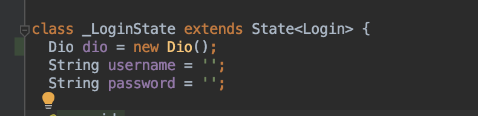<br>接下来在登录按钮的<code>onpressed</code>中添加网络请求</p>
<figure class="highlight plain"><table><tr><td class="gutter"><pre><span class="line">1</span><br><span class="line">2</span><br><span class="line">3</span><br><span class="line">4</span><br><span class="line">5</span><br><span class="line">6</span><br><span class="line">7</span><br><span class="line">8</span><br><span class="line">9</span><br><span class="line">10</span><br><span class="line">11</span><br><span class="line">12</span><br><span class="line">13</span><br><span class="line">14</span><br><span class="line">15</span><br><span class="line">16</span><br><span class="line">17</span><br><span class="line">18</span><br><span class="line">19</span><br><span class="line">20</span><br><span class="line">21</span><br><span class="line">22</span><br><span class="line">23</span><br><span class="line">24</span><br><span class="line">25</span><br><span class="line">26</span><br><span class="line">27</span><br><span class="line">28</span><br><span class="line">29</span><br><span class="line">30</span><br><span class="line">31</span><br><span class="line">32</span><br><span class="line">33</span><br></pre></td><td class="code"><pre><span class="line">RaisedButton(</span><br><span class="line">  child: Text(&apos;Login&apos;),</span><br><span class="line">  color: Colors.blue,</span><br><span class="line">  onPressed: () async &#123;</span><br><span class="line">    String tip = &apos;&apos;;</span><br><span class="line">    if (username == &apos;&apos;) &#123;</span><br><span class="line">      tip = &apos;username empty&apos;;</span><br><span class="line">    &#125; else if (password == &apos;&apos;) &#123;</span><br><span class="line">      tip = &apos;password empty&apos;;</span><br><span class="line">    &#125; else &#123;</span><br><span class="line">      try &#123;</span><br><span class="line">        Response res = await dio.post(</span><br><span class="line">            &apos;http://118.25.7.84:10086/login&apos;,    //这个是我自己的服务器提供的接口，可以直接用</span><br><span class="line">            data: &#123;</span><br><span class="line">              &apos;username&apos;: username,</span><br><span class="line">              &apos;password&apos;: password</span><br><span class="line">            &#125;</span><br><span class="line">        );</span><br><span class="line">        print(res.data);</span><br><span class="line">        tip = res.data;</span><br><span class="line">      &#125; catch (e) &#123;</span><br><span class="line">        print(e);</span><br><span class="line">        tip = &apos;failed&apos;;</span><br><span class="line">      &#125;</span><br><span class="line">    &#125;</span><br><span class="line">    Scaffold.of(context).showSnackBar(</span><br><span class="line">      SnackBar(</span><br><span class="line">        content: Text(tip),</span><br><span class="line">        duration: Duration(seconds: 1),</span><br><span class="line">      )</span><br><span class="line">    );</span><br><span class="line">  &#125;</span><br><span class="line">)</span><br></pre></td></tr></table></figure>

<p>具体这就实现了网络请求，接口返回<code>登录成功</code>，另外用了<code>try catch</code>捕获异常。<br>贴一下完整代码</p>
<figure class="highlight plain"><table><tr><td class="gutter"><pre><span class="line">1</span><br><span class="line">2</span><br><span class="line">3</span><br><span class="line">4</span><br><span class="line">5</span><br><span class="line">6</span><br><span class="line">7</span><br><span class="line">8</span><br><span class="line">9</span><br><span class="line">10</span><br><span class="line">11</span><br><span class="line">12</span><br><span class="line">13</span><br><span class="line">14</span><br><span class="line">15</span><br><span class="line">16</span><br><span class="line">17</span><br><span class="line">18</span><br><span class="line">19</span><br><span class="line">20</span><br><span class="line">21</span><br><span class="line">22</span><br><span class="line">23</span><br><span class="line">24</span><br><span class="line">25</span><br><span class="line">26</span><br><span class="line">27</span><br><span class="line">28</span><br><span class="line">29</span><br><span class="line">30</span><br><span class="line">31</span><br><span class="line">32</span><br><span class="line">33</span><br><span class="line">34</span><br><span class="line">35</span><br><span class="line">36</span><br><span class="line">37</span><br><span class="line">38</span><br><span class="line">39</span><br><span class="line">40</span><br><span class="line">41</span><br><span class="line">42</span><br><span class="line">43</span><br><span class="line">44</span><br><span class="line">45</span><br><span class="line">46</span><br><span class="line">47</span><br><span class="line">48</span><br><span class="line">49</span><br><span class="line">50</span><br><span class="line">51</span><br><span class="line">52</span><br><span class="line">53</span><br><span class="line">54</span><br><span class="line">55</span><br><span class="line">56</span><br><span class="line">57</span><br><span class="line">58</span><br><span class="line">59</span><br><span class="line">60</span><br><span class="line">61</span><br><span class="line">62</span><br><span class="line">63</span><br><span class="line">64</span><br><span class="line">65</span><br><span class="line">66</span><br><span class="line">67</span><br><span class="line">68</span><br><span class="line">69</span><br><span class="line">70</span><br><span class="line">71</span><br><span class="line">72</span><br><span class="line">73</span><br><span class="line">74</span><br><span class="line">75</span><br><span class="line">76</span><br><span class="line">77</span><br><span class="line">78</span><br><span class="line">79</span><br><span class="line">80</span><br><span class="line">81</span><br><span class="line">82</span><br><span class="line">83</span><br><span class="line">84</span><br><span class="line">85</span><br><span class="line">86</span><br><span class="line">87</span><br><span class="line">88</span><br><span class="line">89</span><br><span class="line">90</span><br><span class="line">91</span><br><span class="line">92</span><br><span class="line">93</span><br><span class="line">94</span><br><span class="line">95</span><br><span class="line">96</span><br><span class="line">97</span><br><span class="line">98</span><br><span class="line">99</span><br><span class="line">100</span><br><span class="line">101</span><br><span class="line">102</span><br><span class="line">103</span><br><span class="line">104</span><br><span class="line">105</span><br><span class="line">106</span><br><span class="line">107</span><br><span class="line">108</span><br><span class="line">109</span><br><span class="line">110</span><br><span class="line">111</span><br><span class="line">112</span><br><span class="line">113</span><br><span class="line">114</span><br><span class="line">115</span><br><span class="line">116</span><br><span class="line">117</span><br><span class="line">118</span><br><span class="line">119</span><br><span class="line">120</span><br><span class="line">121</span><br><span class="line">122</span><br><span class="line">123</span><br><span class="line">124</span><br><span class="line">125</span><br><span class="line">126</span><br></pre></td><td class="code"><pre><span class="line">import &apos;package:flutter/material.dart&apos;;</span><br><span class="line">import &apos;dart:async&apos;;</span><br><span class="line">import &apos;package:dio/dio.dart&apos;;</span><br><span class="line"></span><br><span class="line">class Login extends StatefulWidget &#123;</span><br><span class="line">  @override</span><br><span class="line">  _LoginState createState() =&gt; new _LoginState();</span><br><span class="line">&#125;</span><br><span class="line"></span><br><span class="line">class _LoginState extends State&lt;Login&gt; &#123;</span><br><span class="line">  Dio dio = new Dio();</span><br><span class="line">  String username = &apos;&apos;;</span><br><span class="line">  String password = &apos;&apos;;</span><br><span class="line"></span><br><span class="line">  @override</span><br><span class="line">  Widget build(BuildContext context) &#123;</span><br><span class="line">    return Scaffold(</span><br><span class="line">      body: Builder (builder: (BuildContext context) &#123;</span><br><span class="line">        return Column(</span><br><span class="line">          crossAxisAlignment: CrossAxisAlignment.center,</span><br><span class="line">          children: &lt;Widget&gt;[</span><br><span class="line">            Container (</span><br><span class="line">              padding: EdgeInsets.only(</span><br><span class="line">                top:50,</span><br><span class="line">                left: 20,</span><br><span class="line">                right: 20</span><br><span class="line">              ),</span><br><span class="line">              child: TextField (</span><br><span class="line">                decoration: InputDecoration(</span><br><span class="line">                  prefixIcon: Icon(Icons.person),</span><br><span class="line">                  labelText: (&apos;username&apos;)</span><br><span class="line">                ),</span><br><span class="line">                onChanged: (value) &#123;</span><br><span class="line">                  setState(() &#123;</span><br><span class="line">                    username = value;</span><br><span class="line">                  &#125;);</span><br><span class="line">                &#125;,</span><br><span class="line">              )</span><br><span class="line">            ),</span><br><span class="line">            Container (</span><br><span class="line">              padding: EdgeInsets.all(20),</span><br><span class="line">              child: TextField (</span><br><span class="line">                decoration: InputDecoration(</span><br><span class="line">                  prefixIcon: Icon(Icons.lock),</span><br><span class="line">                  labelText: (&apos;password&apos;)</span><br><span class="line">                ),</span><br><span class="line">                obscureText: true,</span><br><span class="line">                onChanged: (value) &#123;</span><br><span class="line">                  setState(() &#123;</span><br><span class="line">                    password = value;</span><br><span class="line">                  &#125;);</span><br><span class="line">                &#125;</span><br><span class="line">              )</span><br><span class="line">            ),</span><br><span class="line">            Row (</span><br><span class="line">              mainAxisAlignment: MainAxisAlignment.center,</span><br><span class="line">              children: &lt;Widget&gt;[</span><br><span class="line">                Container (</span><br><span class="line">                  margin: EdgeInsets.only(</span><br><span class="line">                    left: 10,</span><br><span class="line">                    right: 10</span><br><span class="line">                  ),</span><br><span class="line">                  child: RaisedButton(</span><br><span class="line">                    child: Text(&apos;Login&apos;),</span><br><span class="line">                    color: Colors.blue,</span><br><span class="line">                    onPressed: () async &#123;</span><br><span class="line">                      String tip = &apos;&apos;;</span><br><span class="line">                      if (username == &apos;&apos;) &#123;</span><br><span class="line">                        tip = &apos;username empty&apos;;</span><br><span class="line">                      &#125; else if (password == &apos;&apos;) &#123;</span><br><span class="line">                        tip = &apos;password empty&apos;;</span><br><span class="line">                      &#125; else &#123;</span><br><span class="line">                        try &#123;</span><br><span class="line">                          Response res = await dio.post(</span><br><span class="line">                              &apos;http://118.25.7.84:10086/login&apos;,</span><br><span class="line">                              data: &#123;</span><br><span class="line">                                &apos;username&apos;: username,</span><br><span class="line">                                &apos;password&apos;: password</span><br><span class="line">                              &#125;</span><br><span class="line">                          );</span><br><span class="line">                          print(res.data);</span><br><span class="line">                          tip = res.data;</span><br><span class="line">                          Timer(</span><br><span class="line">                            Duration(seconds: 1),</span><br><span class="line">                            () &#123;</span><br><span class="line">                              Navigator.pop(context, true);</span><br><span class="line">                            &#125;</span><br><span class="line">                          );</span><br><span class="line">                        &#125; catch (e) &#123;</span><br><span class="line">                          print(e);</span><br><span class="line">                          tip = &apos;failed&apos;;</span><br><span class="line">                        &#125;</span><br><span class="line">                      &#125;</span><br><span class="line">                      Scaffold.of(context).showSnackBar(</span><br><span class="line">                        SnackBar(</span><br><span class="line">                          content: Text(tip),</span><br><span class="line">                          duration: Duration(seconds: 1),</span><br><span class="line">                        )</span><br><span class="line">                      );</span><br><span class="line">                    &#125;</span><br><span class="line">                  )</span><br><span class="line">                ),</span><br><span class="line">                Container (</span><br><span class="line">                  margin: EdgeInsets.only(</span><br><span class="line">                    left: 10,</span><br><span class="line">                    right: 10</span><br><span class="line">                  ),</span><br><span class="line">                  child: RaisedButton(</span><br><span class="line">                    child: Text(&apos;Cancel&apos;),</span><br><span class="line">                    onPressed: () &#123;</span><br><span class="line">                      setState(() &#123;</span><br><span class="line">                        username = &apos;&apos;;</span><br><span class="line">                        password = &apos;&apos;;</span><br><span class="line">                      &#125;);</span><br><span class="line">                      Navigator.pop(context, false);</span><br><span class="line">                    &#125;</span><br><span class="line">                  )</span><br><span class="line">                )</span><br><span class="line">              ]</span><br><span class="line">            )</span><br><span class="line">          ],</span><br><span class="line">        );</span><br><span class="line">      &#125;)</span><br><span class="line">    );</span><br><span class="line">  &#125;</span><br><span class="line">&#125;</span><br></pre></td></tr></table></figure>

<p>目前flutter已经支持<code>MacOs</code>，可以在吗命令行执行以下命令</p>
<figure class="highlight plain"><table><tr><td class="gutter"><pre><span class="line">1</span><br></pre></td><td class="code"><pre><span class="line">flutter config --enable-macos-desktop</span><br></pre></td></tr></table></figure>

<p>在项目目录下执行</p>
<figure class="highlight plain"><table><tr><td class="gutter"><pre><span class="line">1</span><br></pre></td><td class="code"><pre><span class="line">flutter create .</span><br></pre></td></tr></table></figure>

<p>即可体验<br>在<code>android studio</code>的设备下啦列表了会多一个<code>macOs(desktop)</code>，选中后就可以跑起来了。<br>这里需要注意的是，跑起来之后调接口是会失败的，需要在<code>macos/Runner/DebugProfile.entitlements</code>文件中添加<code>com.apple.security.network.client</code>。</p>
<figure class="highlight plain"><table><tr><td class="gutter"><pre><span class="line">1</span><br><span class="line">2</span><br><span class="line">3</span><br><span class="line">4</span><br><span class="line">5</span><br><span class="line">6</span><br><span class="line">7</span><br><span class="line">8</span><br><span class="line">9</span><br><span class="line">10</span><br><span class="line">11</span><br><span class="line">12</span><br><span class="line">13</span><br><span class="line">14</span><br></pre></td><td class="code"><pre><span class="line">&lt;?xml version=&quot;1.0&quot; encoding=&quot;UTF-8&quot;?&gt;</span><br><span class="line">&lt;!DOCTYPE plist PUBLIC &quot;-//Apple//DTD PLIST 1.0//EN&quot; &quot;http://www.apple.com/DTDs/PropertyList-1.0.dtd&quot;&gt;</span><br><span class="line">&lt;plist version=&quot;1.0&quot;&gt;</span><br><span class="line">&lt;dict&gt;</span><br><span class="line">	&lt;key&gt;com.apple.security.app-sandbox&lt;/key&gt;</span><br><span class="line">	&lt;true/&gt;</span><br><span class="line">	&lt;key&gt;com.apple.security.cs.allow-jit&lt;/key&gt;</span><br><span class="line">	&lt;true/&gt;</span><br><span class="line">	&lt;key&gt;com.apple.security.network.server&lt;/key&gt;</span><br><span class="line">	&lt;true/&gt;</span><br><span class="line">	&lt;key&gt;com.apple.security.network.client&lt;/key&gt;</span><br><span class="line">	&lt;true/&gt;</span><br><span class="line">&lt;/dict&gt;</span><br><span class="line">&lt;/plist&gt;</span><br></pre></td></tr></table></figure>

<p>以上代码在<code>http_server</code>分支。</p>
<p>最后还是要吐槽一下<code>flutter</code>的地狱嵌套，当然和我没有拆分组件有关系。。。看着脑袋疼。</p>

      
      <!-- 打赏 -->
      
    </div>
    <footer class="article-footer">
      <!-- 
      <a data-url="http://yoursite.com/post/flutterDemoMockLogin/" data-id="ck5109kcw000lbqhs0rgtbwk5"
        class="article-share-link">分享</a>
      
       -->
    </footer>

  </div>

  
  
  <nav class="article-nav">
    
    
      <a href="/post/flutterTextFieldWidget/" class="article-nav-link">
        <strong class="article-nav-caption">下一篇</strong>
        <div class="article-nav-title">输入框TextField</div>
      </a>
    
  </nav>


  

  
  
<!-- valine评论 -->
<div id="vcomments-box">
    <div id="vcomments">
    </div>
</div>
<script src="//cdn1.lncld.net/static/js/3.0.4/av-min.js"></script>
<script src='https://cdn.jsdelivr.net/npm/valine@1.3.10/dist/Valine.min.js'></script>
<script>
    new Valine({
        el: '#vcomments',
        notify: false,
        verify: false,
        app_id: '',
        app_key: '',
        path: window.location.pathname,
        avatar: 'mp',
        placeholder: '给我的文章加点评论吧~',
        recordIP: true
    });
    const infoEle = document.querySelector('#vcomments .info');
    if (infoEle && infoEle.childNodes && infoEle.childNodes.length > 0) {
        infoEle.childNodes.forEach(function (item) {
            item.parentNode.removeChild(item);
        });
    }
</script>
<style>
    #vcomments-box {
        padding: 5px 30px;
    }

    @media screen and (max-width: 800px) {
        #vcomments-box {
            padding: 5px 0px;
        }
    }

    #vcomments-box #vcomments {
        background-color: #fff;
    }

    .v .vlist .vcard .vh {
        padding-right: 20px;
    }

    .v .vlist .vcard {
        padding-left: 10px;
    }
</style>

  

  
  
  

</article>

</section>
      <footer class="footer">
  <div class="outer">
    <ul class="list-inline">
      <li>
        &copy;
        2020-01
        MonkeyInWind
      </li>
      <li>
        <!--
        
          Power by
        
        
        <a href="https://hexo.io" target="_blank">Hexo</a> Theme <a href="https://github.com/Shen-Yu/hexo-theme-ayer" target="_blank">Ayer</a>
        
        -->
        <a target="_blank" href='https://github.com/MonkeyInWind'>GitHub</a>
      </li>
    </ul>
    <ul class="list-inline">
      <li>
        
      </li>
      <li>
        <!-- cnzz统计 -->
        
      </li>
    </ul>
  </div>
</footer>

    <div class="to_top">
        <div class="totop" id="totop">
  <i class="ri-arrow-up-line"></i>
</div>
      </div>
    </main>
    
    <aside class="sidebar">
      
        <button class="navbar-toggle"></button>
<nav class="navbar">
  
  <div class="logo">
    <a href="/"></a>
  </div>
  
  <ul class="nav nav-main">
    
    <li class="nav-item">
      <a class="nav-item-link" href="/">主页</a>
    </li>
    
    <li class="nav-item">
      <a class="nav-item-link" href="/archives">目录</a>
    </li>
    
    <li class="nav-item">
      <a class="nav-item-link" href="/Categories">分类</a>
    </li>
    
    <li class="nav-item">
      <a class="nav-item-link" href="/About">关于我</a>
    </li>
    
  </ul>
</nav>
<nav class="navbar navbar-bottom">
  <ul class="nav">
    <li class="nav-item">
      
      <a class="nav-item-link nav-item-search"  title="Search">
        <i class="ri-search-line"></i>
      </a>
      
      
    </li>
  </ul>
</nav>
<div class="search-form-wrap">
  <div class="local-search local-search-plugin">
  <input type="search" id="local-search-input" class="local-search-input" placeholder="Search...">
  <div id="local-search-result" class="local-search-result"></div>
</div>
</div>
      </aside>
      <div id="mask"></div>

<!-- #reward -->
<div id="reward">
  <span class="close"><i class="ri-close-line"></i></span>
  <p class="reward-p"><i class="ri-cup-line"></i>请我喝杯咖啡吧~</p>
  <div class="reward-box">
    
    
  </div>
</div>
      <script src="/js/jquery-2.0.3.min.js"></script>
<script src="/js/jquery.justifiedGallery.min.js"></script>
<script src="/js/lazyload.min.js"></script>
<script src="/js/busuanzi-2.3.pure.min.js"></script>

  <script src="/fancybox/jquery.fancybox.min.js"></script>


  <script src="/js/tocbot.min.js"></script>
  <script>
    // Tocbot_v4.7.0  http://tscanlin.github.io/tocbot/
    tocbot.init({
      tocSelector: '.tocbot',
      contentSelector: '.article-entry',
      headingSelector: 'h1, h2, h3, h4, h5, h6',
      hasInnerContainers: true,
      scrollSmooth: true,
      positionFixedSelector: '.tocbot',
      positionFixedClass: 'is-position-fixed',
      fixedSidebarOffset: 'auto',
    });
  </script>


<script>
  var ayerConfig = {
    mathjax: false
  }
</script>

<script src="/js/ayer.js"></script>

<script src="https://cdn.jsdelivr.net/npm/jquery-modal@0.9.2/jquery.modal.min.js"></script>
<link rel="stylesheet" href="https://cdn.jsdelivr.net/npm/jquery-modal@0.9.2/jquery.modal.min.css">


<script type="text/javascript" src="https://js.users.51.la/20544303.js"></script>
  
  
  </div>
</body>

</html>